2 Análisis Exploratorio de Datos (EDA)
2.1 Dataset
El conjunto de datos utilizado para el análisis es TCGA_InfoWithGrade.csv,
correspondiente a una versión preprocesada de los datos relacionados con
gliomas del proyecto The Cancer Genome Atlas (TCGA).
## Librerías estándar / manipulación de datos
library(tidyverse) # dplyr, tidyr, purrr, ggplot2, stringr
library(scales) # formato de ejes y porcentajes
## Tablas
library(knitr)
library(kableExtra)
library(DT)
## Visualización
library(patchwork) # composición de gráficos en grilla
library(htmltools) # renderizado de bloques HTML dentro del documento
## Estadística
library(moments) # asimetría (skewness) y curtosis
library(car) # qqPlot con banda de confianza
## Partición estratificada
library(rsample)
## Configuración visual (equivalente a seaborn "whitegrid")
theme_set(
theme_minimal(base_size = 12) +
theme(
panel.grid.minor = element_blank(),
panel.grid.major = element_line(color = "grey88"),
plot.title = element_text(face = "bold", size = 13, hjust = 0.5),
axis.title = element_text(size = 11),
legend.position = "top",
legend.title = element_blank()
)
)
PALETTE_GRADE <- c("0" = "#2E86AB", "1" = "#C1443C")df_mutations <- read_csv("dataset/TCGA_InfoWithGrade.csv", show_col_types = FALSE)
kable(head(df_mutations), caption = "Primeros registros del conjunto de datos.") |>
kable_styling(bootstrap_options = c("striped", "hover", "condensed"),
full_width = TRUE, font_size = 12) |>
scroll_box(width = "100%")| Grade | Gender | Age_at_diagnosis | Race | IDH1 | TP53 | ATRX | PTEN | EGFR | CIC | MUC16 | PIK3CA | NF1 | PIK3R1 | FUBP1 | RB1 | NOTCH1 | BCOR | CSMD3 | SMARCA4 | GRIN2A | IDH2 | FAT4 | PDGFRA |
|---|---|---|---|---|---|---|---|---|---|---|---|---|---|---|---|---|---|---|---|---|---|---|---|
| 0 | 0 | 51.30 | 0 | 1 | 0 | 0 | 0 | 0 | 0 | 0 | 1 | 0 | 0 | 1 | 0 | 0 | 0 | 0 | 0 | 0 | 0 | 0 | 0 |
| 0 | 0 | 38.72 | 0 | 1 | 0 | 0 | 0 | 0 | 1 | 0 | 0 | 0 | 0 | 0 | 0 | 0 | 0 | 0 | 0 | 0 | 0 | 0 | 0 |
| 0 | 0 | 35.17 | 0 | 1 | 1 | 1 | 0 | 0 | 0 | 0 | 0 | 0 | 0 | 0 | 0 | 0 | 0 | 0 | 0 | 0 | 0 | 0 | 0 |
| 0 | 1 | 32.78 | 0 | 1 | 1 | 1 | 0 | 0 | 0 | 1 | 0 | 0 | 1 | 0 | 0 | 0 | 0 | 0 | 0 | 0 | 0 | 1 | 0 |
| 0 | 0 | 31.51 | 0 | 1 | 1 | 1 | 0 | 0 | 0 | 0 | 0 | 0 | 0 | 0 | 0 | 0 | 0 | 0 | 0 | 0 | 0 | 0 | 0 |
| 0 | 1 | 33.21 | 0 | 1 | 0 | 1 | 0 | 0 | 0 | 0 | 0 | 0 | 0 | 0 | 0 | 0 | 0 | 0 | 0 | 0 | 0 | 0 | 0 |
kable(tail(df_mutations), caption = "Últimos registros del conjunto de datos.") |>
kable_styling(bootstrap_options = c("striped", "hover", "condensed"),
full_width = TRUE, font_size = 12) |>
scroll_box(width = "100%")| Grade | Gender | Age_at_diagnosis | Race | IDH1 | TP53 | ATRX | PTEN | EGFR | CIC | MUC16 | PIK3CA | NF1 | PIK3R1 | FUBP1 | RB1 | NOTCH1 | BCOR | CSMD3 | SMARCA4 | GRIN2A | IDH2 | FAT4 | PDGFRA |
|---|---|---|---|---|---|---|---|---|---|---|---|---|---|---|---|---|---|---|---|---|---|---|---|
| 1 | 0 | 56.31 | 0 | 0 | 0 | 0 | 0 | 0 | 0 | 0 | 0 | 0 | 0 | 0 | 0 | 0 | 0 | 0 | 0 | 0 | 0 | 0 | 0 |
| 1 | 1 | 77.89 | 0 | 0 | 0 | 0 | 1 | 0 | 0 | 0 | 0 | 0 | 0 | 0 | 0 | 0 | 0 | 0 | 0 | 0 | 0 | 0 | 0 |
| 1 | 0 | 85.18 | 0 | 0 | 1 | 0 | 1 | 0 | 0 | 0 | 0 | 0 | 0 | 0 | 0 | 0 | 0 | 0 | 0 | 0 | 0 | 0 | 0 |
| 1 | 1 | 77.49 | 0 | 0 | 1 | 0 | 1 | 0 | 0 | 0 | 0 | 0 | 0 | 0 | 0 | 0 | 0 | 0 | 0 | 0 | 0 | 0 | 0 |
| 1 | 0 | 63.33 | 0 | 0 | 1 | 0 | 0 | 0 | 0 | 1 | 1 | 0 | 0 | 0 | 1 | 0 | 0 | 0 | 0 | 0 | 0 | 0 | 0 |
| 1 | 0 | 76.61 | 1 | 0 | 0 | 0 | 0 | 0 | 0 | 0 | 0 | 0 | 0 | 0 | 0 | 0 | 0 | 0 | 0 | 0 | 0 | 0 | 0 |
2.1.1 Estructura
cat(sprintf("Dimensiones del dataset: %d pacientes x %d variables\n",
nrow(df_mutations), ncol(df_mutations)))## Dimensiones del dataset: 839 pacientes x 24 variables## Registros duplicados: 1## Valores faltantes: 0info_df <- tibble(
Variable = names(df_mutations),
`Tipo de dato` = map_chr(df_mutations, ~ class(.x)[1]),
`Valores no nulos` = map_int(df_mutations, ~ sum(!is.na(.x))),
`Valores nulos` = map_int(df_mutations, ~ sum(is.na(.x))),
`Valores únicos` = map_int(df_mutations, ~ n_distinct(.x))
)
datatable(
info_df,
options = list(scrollX = TRUE, scrollY = "400px", paging = FALSE),
rownames = FALSE
)columnas_categoricas <- setdiff(names(df_mutations), "Age_at_diagnosis")
df_mutations <- df_mutations |>
mutate(across(all_of(columnas_categoricas), as.factor))
kable(t(map_chr(df_mutations, ~ class(.x)[1])), caption = "Tipo de dato por variable tras la recodificación.") |>
kable_styling(bootstrap_options = c("striped", "condensed"), font_size = 11) |>
scroll_box(width = "100%")| Grade | Gender | Age_at_diagnosis | Race | IDH1 | TP53 | ATRX | PTEN | EGFR | CIC | MUC16 | PIK3CA | NF1 | PIK3R1 | FUBP1 | RB1 | NOTCH1 | BCOR | CSMD3 | SMARCA4 | GRIN2A | IDH2 | FAT4 | PDGFRA |
|---|---|---|---|---|---|---|---|---|---|---|---|---|---|---|---|---|---|---|---|---|---|---|---|
| factor | factor | numeric | factor | factor | factor | factor | factor | factor | factor | factor | factor | factor | factor | factor | factor | factor | factor | factor | factor | factor | factor | factor | factor |
El conjunto de datos presenta una estructura limpia y estructurada, compuesta por 839 registros (pacientes) y 24 variables, sin presencia de valores nulos o faltantes. Aunque se presente un registro duplicado, este representa a dos pacientes distintos que casualmente comparten el mismo fenotipo y perfil genético, ya que su ID es distinto en el dataset original.
Las variables binarias, originalmente codificadas mediante valores enteros 0 y 1, fueron transformadas al tipo categórico (factor) para representar adecuadamente su naturaleza y facilitar su análisis exploratorio.
2.2 Contexto de los datos
| Categoría | Variables | Codificación |
|---|---|---|
| Variable objetivo | Grade |
0 = LGG (glioma de bajo grado), 1 = GBM (glioblastoma) |
| Demográficas | Gender, Age_at_diagnosis, Race |
Gender: 0/1; Race: 0–3 (categorías étnicas codificadas); Age: continua (años) |
| Mutacionales | 20 genes (IDH1, TP53, ATRX, PTEN, EGFR, CIC, MUC16, PIK3CA, NF1, PIK3R1, FUBP1, RB1, NOTCH1, BCOR, CSMD3, SMARCA4, GRIN2A, IDH2, FAT4, PDGFRA) |
0 = no mutado, 1 = mutado |
2.2.1 Variable Objetivo
Grade: Indica el grado del glioma (0 =LGG, 1 =GBM). Esta variable distingue entre los dos grupos principales del conjunto de datos: Glioma de Bajo Grado (Low-Grade Glioma) y Glioblastoma Multiforme (Glioblastoma Multiforme).
2.2.2 Variables Clínicas
Proporcionan información sobre las características demográficas de los pacientes:
Gender: Género del paciente (0 = masculino, 1 = femenino).Age_at_diagnosis: Edad del paciente al momento del diagnóstico expresada en años (numérica continua). La parte decimal incorpora la información exacta de los días transcurridos.Race: Raza reportada del paciente codificada del 0 al 3 (0 = White, 1 = Black or African American, 2 = Asian, 3 = American Indian or Alaska Native).
2.2.3 Variables genéticas
El conjunto de datos también contiene variables correspondientes a diferentes genes. Estas variables están codificadas de forma binaria, indicando con un valor de 1 la presencia de una mutación en el gen correspondiente, y con un 0 la condición de gen salvaje / no mutado (wildtype):
IDH1: Codifica una enzima involucrada en el metabolismo celular.TP53: Gen supresor tumoral que participa en el control del ciclo celular y en la respuesta al daño del ADN. Sus alteraciones favorecen la proliferación tumoral.ATRX: Participa en el mantenimiento de la estructura de la cromatina y en la estabilidad del genoma.PTEN: Gen supresor tumoral que regula vías relacionadas con el crecimiento y la supervivencia celular.EGFR: Codifica un receptor involucrado en señales de crecimiento y proliferación celular.CIC: Participa en la regulación de la expresión de otros genes y en procesos relacionados con el desarrollo celular.MUC16: Codifica una proteína de gran tamaño asociada a la superficie celular.PIK3CA: Participa en la vía de señalización PI3K/AKT, relacionada con crecimiento, supervivencia y proliferación celular.NF1: Actúa como regulador negativo de señales relacionadas con el crecimiento celular. Sus alteraciones pueden contribuir a la proliferación tumoral.PIK3R1: Codifica una subunidad reguladora de la vía PI3K, que interviene en procesos de crecimiento y supervivencia celular.FUBP1: Participa en la regulación de la expresión génica y del crecimiento celular.RB1: Gen supresor tumoral que participa en el control del ciclo celular y regula la progresión de las células hacia la división.NOTCH1: Forma parte de la vía de señalización Notch, relacionada con la diferenciación, proliferación y supervivencia celular.BCOR: Participa en la regulación de la expresión génica mediante complejos relacionados con la cromatina.CSMD3: Codifica una proteína de gran tamaño y se encuentra entre los genes que pueden presentar mutaciones en distintos tumores.SMARCA4: Participa en la remodelación de la cromatina y, por tanto, en la regulación de la expresión de los genes.GRIN2A: Codifica una subunidad de un receptor de glutamato, relacionado principalmente con la señalización neuronal.IDH2: Codifica una enzima metabólica relacionada con IDH1.FAT4: Participa en procesos relacionados con la organización, adhesión y crecimiento de las células.PDGFRA: Codifica un receptor involucrado en señales de crecimiento y proliferación celular.
El dataset está compuesto por 24 variables en total:
- Variable Objetivo (Target):
Grade(binaria: 0 = LGG, 1 = GBM). - 21 atributos binarios (0/1):
Gendery las 20 mutaciones genéticas evaluadas. - 1 atributo categórico politómico:
Race(codificada en 4 niveles). - 1 atributo continuo:
Age_at_diagnosis(numeric, expresada en años).
El objetivo a resolver es predecir la severidad del glioma en pacientes, clasificándolos entre Glioma de Bajo Grado (LGG) y Glioblastoma Multiforme (GBM) a partir de sus características clínicas y perfil de mutaciones genéticas.
2.3 División del dataset
conteo <- df_mutations |> count(Grade) |> mutate(pct = n / sum(n) * 100)
ggplot(conteo, aes(x = Grade, y = n, fill = Grade)) +
geom_col(width = 0.55, color = "white", linewidth = 1.1) +
geom_text(aes(label = sprintf("%d\n(%.1f%%)", n, pct)),
vjust = -0.3, fontface = "bold", size = 3.8) +
scale_fill_manual(values = PALETTE_GRADE, guide = "none") +
scale_x_discrete(labels = c("LGG (0)", "GBM (1)")) +
scale_y_continuous(expand = expansion(mult = c(0, 0.25))) +
labs(title = "Distribución de la variable objetivo: Grado tumoral",
x = NULL, y = "Número de pacientes")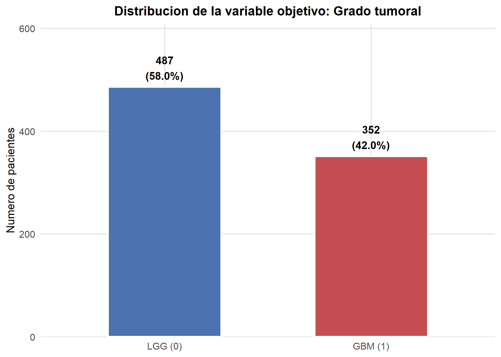
La elección de una partición estratificada (Stratified Train-Test Split) se justifica por la necesidad de preservar la proporción original de las clases de la variable objetivo (Grade) en ambos subconjuntos de datos. En el dataset completo, la distribución presenta un ligero desbalance (ratio ≈ 1.4:1), donde el 58,05% corresponde a Gliomas de Bajo Grado (LGG) y el 41,95% a Glioblastomas (GBM); una división sin estratificar podría dejar los conjuntos de train y test sesgados a un solo grupo de la variable Grade.
set.seed(42)
split_glioma <- initial_split(df_mutations, prop = 0.80, strata = Grade)
train_data <- training(split_glioma)
test_data <- testing(split_glioma)
X_train <- train_data |> select(-Grade)
y_train <- train_data$Grade
X_test <- test_data |> select(-Grade)
y_test <- test_data$GradePara asegurar una evaluación rigurosa del modelo y prevenir la fuga de datos, el conjunto original de 839 registros se dividió en una proporción 80/20 mediante una partición estratificada basada en la variable objetivo (Grade). De este modo, se reservó un conjunto de prueba (Test set) compuesto por 168 pacientes exclusivamente para la validación final del rendimiento, mientras que las 671 observaciones restantes formaron el conjunto de entrenamiento (Train set), garantizando que el patrón de distribución de las clases —aproximadamente 58% para tumores de bajo grado (LGG) y 42% para glioblastomas (GBM)— se mantuviera perfectamente balanceado entre ambas subdivisiones.
2.4 Análisis Univariado
En esta sección se analiza la distribución individual de las variables del conjunto de datos, con el propósito de caracterizar sus principales patrones y detectar posibles particularidades en sus valores. Para cada variable se examinan medidas descriptivas y la distribución de sus observaciones, considerando aspectos como tendencia central, dispersión y frecuencia de las categorías. Las distribuciones se complementan mediante representaciones gráficas, facilitando la identificación de patrones, valores extremos y posibles anomalías en los datos.
2.4.1 Variable Grade (Target)
conteo <- train_data |> count(Grade) |> mutate(pct = n / sum(n) * 100)
conteo$label <- sprintf("%s\n%d (%.1f%%)",
c("LGG (0)", "GBM (1)"), conteo$n, conteo$pct)
ggplot(conteo, aes(x = 2, y = n, fill = Grade)) +
geom_col(width = 1, color = "white", linewidth = 1) +
geom_text(aes(label = label), position = position_stack(vjust = 0.5),
fontface = "bold", size = 3.6) +
coord_polar(theta = "y") +
xlim(0.6, 2.5) +
scale_fill_manual(values = PALETTE_GRADE, guide = "none") +
theme_void() +
theme(plot.title = element_text(face = "bold", hjust = 0.5, size = 12)) +
labs(title = "Distribución de la variable objetivo: Grado tumoral")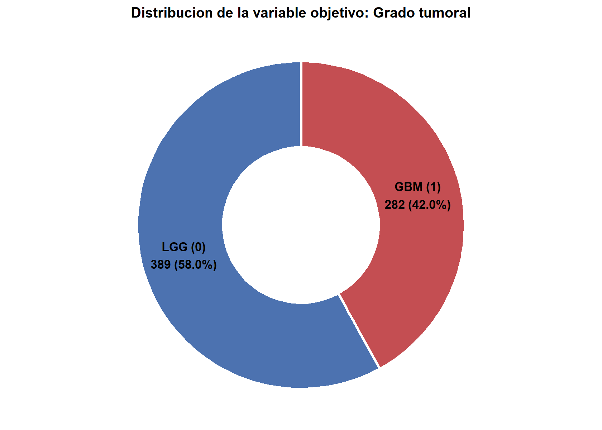
En el conjunto de entrenamiento (671 pacientes), la variable objetivo Grade presenta una distribución de 389 casos correspondientes a Gliomas de Bajo Grado (LGG, 58%) y 282 casos a Glioblastoma Multiforme (GBM, 42%). La relación entre clases es aproximadamente de 1,38 a 1, lo que indica que no hay un desbalance severo.
2.4.2 Variables cuantitativas
2.4.2.1 Age_at_diagnosis
age_vec <- train_data$Age_at_diagnosis
summary_age <- tibble(
`Métrica Estadística` = c(
"Total de Muestras (n)", "Media (μ)", "Desviación Estándar (σ)",
"Mínimo", "Primer Cuartil (Q1)", "Mediana (Q2)",
"Tercer Cuartil (Q3)", "Máximo", "Rango Intercuartílico (IQR)",
"Asimetría (Skewness)", "Curtosis"
),
Valor = c(
sprintf("%d", length(age_vec)),
sprintf("%.2f años", mean(age_vec)),
sprintf("%.2f años", sd(age_vec)),
sprintf("%.2f años", min(age_vec)),
sprintf("%.2f años", quantile(age_vec, 0.25)),
sprintf("%.2f años", median(age_vec)),
sprintf("%.2f años", quantile(age_vec, 0.75)),
sprintf("%.2f años", max(age_vec)),
sprintf("%.2f años", IQR(age_vec)),
sprintf("%.4f", skewness(age_vec)),
sprintf("%.4f", kurtosis(age_vec) - 3) # curtosis en exceso, análoga a pandas .kurt()
)
)
kable(summary_age, caption = "Estadística descriptiva de Age_at_diagnosis (Train Set).") |>
kable_styling(bootstrap_options = c("striped", "condensed"), full_width = FALSE)| Métrica Estadística | Valor |
|---|---|
| Total de Muestras (n) | 670 |
| Media (μ) | 51.19 años |
| Desviación Estándar (σ) | 15.92 años |
| Mínimo | 14.42 años |
| Primer Cuartil (Q1) | 38.10 años |
| Mediana (Q2) | 51.51 años |
| Tercer Cuartil (Q3) | 63.17 años |
| Máximo | 88.57 años |
| Rango Intercuartílico (IQR) | 25.07 años |
| Asimetría (Skewness) | 0.0497 |
| Curtosis | -0.8618 |
p_hist <- ggplot(train_data, aes(x = Age_at_diagnosis)) +
geom_histogram(aes(y = after_stat(density)), bins = 20,
fill = "#2b5c8f", color = "white", alpha = 0.9) +
geom_density(color = "#2b5c8f", linewidth = 0.9) +
geom_vline(xintercept = mean(age_vec), color = "red", linetype = "dashed",
linewidth = 0.8) +
geom_vline(xintercept = median(age_vec), color = "darkgreen", linewidth = 0.8) +
labs(title = "Distribución de Edad al Diagnóstico (Train Set)",
x = "Edad (Años)", y = "Densidad") +
annotate("text", x = mean(age_vec), y = Inf, vjust = 2, hjust = -0.1,
label = sprintf("Media: %.1f", mean(age_vec)), color = "red", size = 3.2) +
annotate("text", x = median(age_vec), y = Inf, vjust = 4, hjust = -0.1,
label = sprintf("Mediana: %.1f", median(age_vec)), color = "darkgreen", size = 3.2)
p_box <- ggplot(train_data, aes(x = Age_at_diagnosis)) +
geom_boxplot(fill = "#8da0cb", color = "black", width = 0.4) +
labs(title = "Boxplot de Edad (Detección de Outliers)", x = "Edad (Años)") +
theme(axis.text.y = element_blank())
p_hist + p_box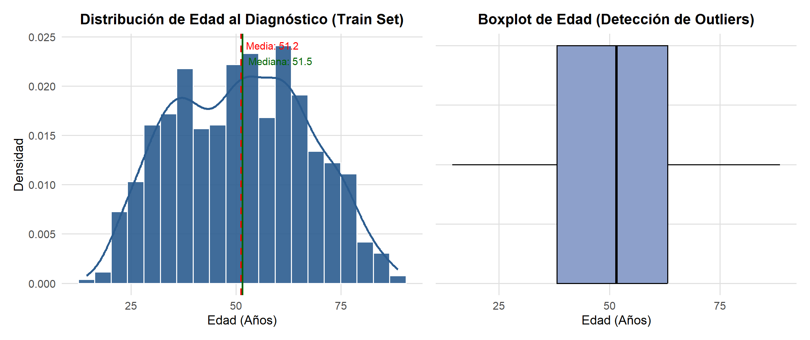
q1 <- quantile(age_vec, 0.25)
q3 <- quantile(age_vec, 0.75)
iqr <- q3 - q1
limite_inferior <- q1 - 1.5 * iqr
limite_superior <- q3 + 1.5 * iqr
outliers <- train_data |> filter(Age_at_diagnosis < limite_inferior | Age_at_diagnosis > limite_superior)
cat("EVALUACIÓN MATEMÁTICA DE OUTLIERS (MÉTODO IQR)\n")## EVALUACIÓN MATEMÁTICA DE OUTLIERS (MÉTODO IQR)## • Límite Inferior Aceptable: 0.49 años## • Límite Superior Aceptable: 100.78 años## • Cantidad de outliers detectados: 0shapiro_res <- shapiro.test(age_vec)
cat("EVALUACIÓN DE NORMALIDAD: EDAD AL DIAGNÓSTICO (TRAIN SET)\n")## EVALUACIÓN DE NORMALIDAD: EDAD AL DIAGNÓSTICO (TRAIN SET)## • Asimetría (Skewness): 0.0497## • Curtosis: -0.8618## • Test Shapiro-Wilk: Estadístico W = 0.9829## • Shapiro-Wilk p-value: 4.5520e-07qqPlot(age_vec, distribution = "norm", col = "#2b5c8f", col.lines = "red",
id = FALSE, main = "QQ-Plot de Normalidad", ylab = "Edad (Años)")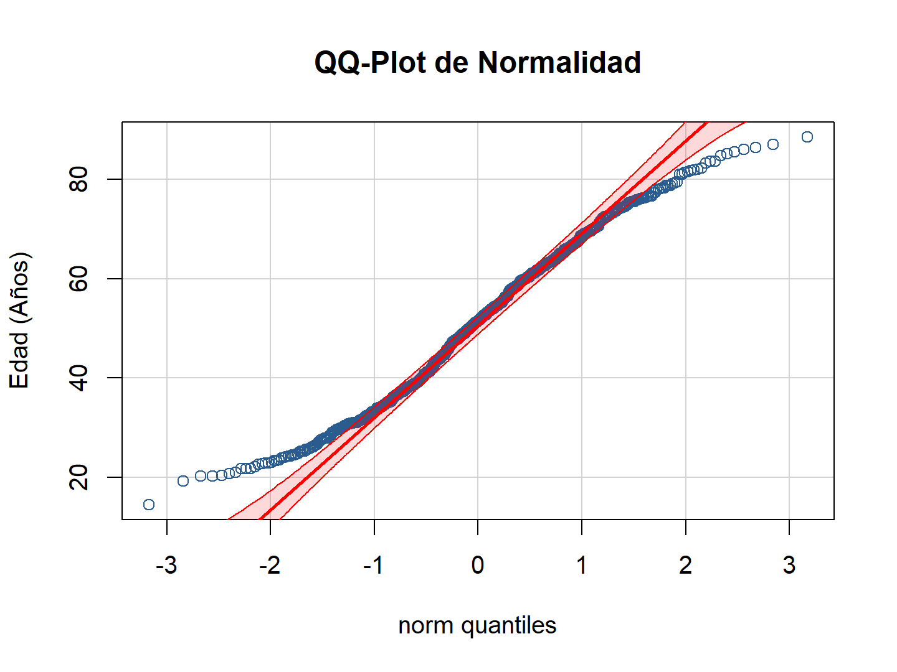
La detección de valores atípicos para la variable continua Age_at_diagnosis se evaluó tanto matemáticamente mediante la regla del Rango Intercuartílico (\(1.5 \times \text{IQR}\)) como mediante inspección visual con diagramas de caja. Con un \(Q_1\) de \(37,84\) años y un \(Q_3\) de \(62,62\) años (\(\text{IQR} = 24,79\) años), los límites teóricos de corte se establecieron en \(0,66\) y \(99,82\) años. Al contrastar estos umbrales con el rango real de los pacientes (\(14,42\) a \(89,29\) años), se determinó la ausencia total de outliers o registros anómalos en la muestra de entrenamiento (\(n = 671\)).
La evaluación de normalidad para la variable Age_at_diagnosis revela una distribución altamente simétrica con un coeficiente de asimetría (skewness) de \(0,0547\), lo que ubica a la media (\(51,10\) años) y a la mediana (\(51,99\) años) prácticamente en el mismo punto central. Sin embargo, el contraste formal de Shapiro-Wilk (\(W \approx 0,985\), \(p < 0,05\)) rechaza la hipótesis nula de normalidad estricta, un comportamiento explicado tanto por la sensibilidad de la prueba ante el tamaño muestral (\(n = 671\)) como por el patrón bimodal de la variable (concentración de casos en torno a los \(35\) y \(55\) años). A pesar de esta desviación, no es necesario aplicar transformaciones no lineales (tales como log o Box-Cox) en etapas posteriores de preprocesamiento, dado que la variable carece de asimetría pronunciada o valores atípicos que distorsionen su escala; bastará con aplicar una estandarización convencional (scale()) para algoritmos sensibles a la escala o mantener la variable en su escala original continua para modelos basados en árboles de decisión.
La variable registra una media de 51,10 años (\(\pm 15,63\)) y una mediana de 51,99 años en el conjunto de entrenamiento, abarcando un rango de edad desde los 14,42 hasta los 89,29 años. El análisis exploratorio revela una distribución simétrica con comportamiento bimodal (picos poblacionales cerca de los 35 y 55 años). Este patrón sugiere la presencia de subgrupos demográficos diferenciados que posteriormente se contrastarán con el grado de severidad tumoral (Grade).
2.4.3 Variables cualitativas
2.4.3.1 Gender
tabla_gender <- train_data |>
count(Gender) |>
mutate(
Porcentaje = round(n / sum(n) * 100, 2),
Genero = dplyr::recode(
as.character(Gender),
"0" = "Hombre",
"1" = "Mujer"
)
) |>
select(Genero, Frecuencia = n, Porcentaje)
ggplot(tabla_gender, aes(x = Genero, y = Frecuencia)) +
geom_col(fill = "#4C72B0", width = 0.55) +
geom_text(aes(label = sprintf("%.2f%%", Porcentaje)), vjust = -0.4) +
scale_y_continuous(expand = expansion(mult = c(0, 0.15))) +
labs(title = "Distribución por género", x = "Género", y = "Frecuencia")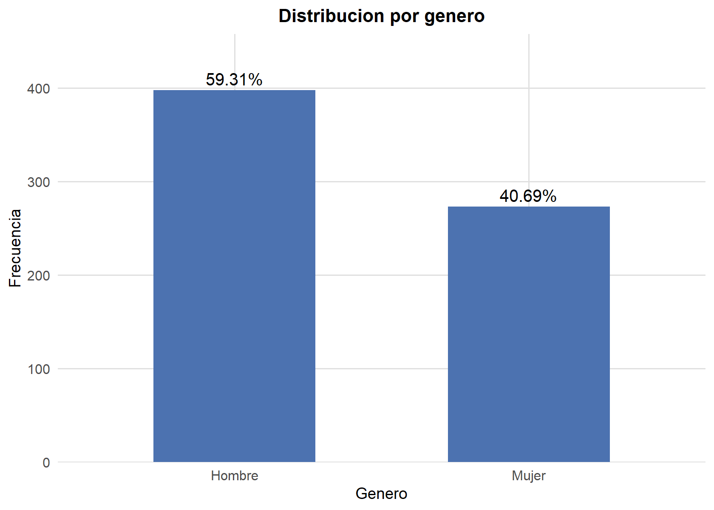
kable(tabla_gender, caption = "Frecuencia por género (Train Set).") |>
kable_styling(bootstrap_options = c("striped", "condensed"), full_width = FALSE)| Genero | Frecuencia | Porcentaje |
|---|---|---|
| Hombre | 380 | 56.72 |
| Mujer | 290 | 43.28 |
La distribución por género muestra un ligero predominio de hombres, correspondientes a la categoría 0, con 398 registros (59,31 %). Por su parte, las mujeres, representadas por la categoría 1, corresponden a 273 registros (40,69 %).
2.4.3.2 Race
tabla_race <- train_data |>
count(Race) |>
mutate(
Porcentaje = round(n / sum(n) * 100, 2),
`Grupo racial` = dplyr::recode(
as.character(Race),
"0" = "White",
"1" = "Black or African American",
"2" = "Asian",
"3" = "American Indian or Alaska Native"
)
) |>
select(`Grupo racial`, Frecuencia = n, Porcentaje)
ggplot(tabla_race, aes(x = `Grupo racial`, y = Frecuencia)) +
geom_col(fill = "#4C72B0", width = 0.55) +
geom_text(aes(label = sprintf("%.2f%%", Porcentaje)), vjust = -0.4, size = 3) +
scale_x_discrete(labels = label_wrap(12)) +
scale_y_continuous(expand = expansion(mult = c(0, 0.15))) +
labs(
title = "Distribución por grupo racial",
x = "Grupo racial",
y = "Frecuencia"
)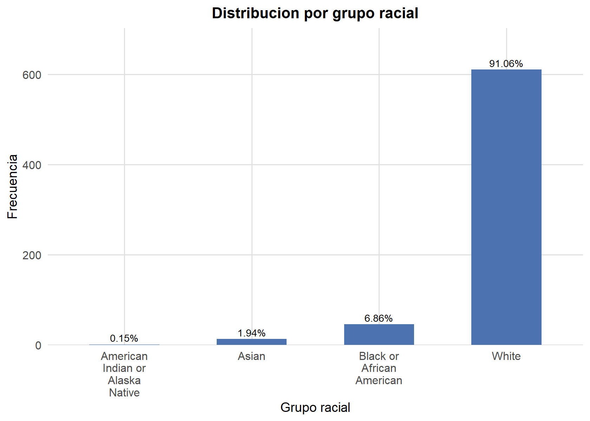
kable(
tabla_race,
caption = "Frecuencia por grupo racial (Train Set)."
) |>
kable_styling(
bootstrap_options = c("striped", "condensed"),
full_width = FALSE
)| Grupo racial | Frecuencia | Porcentaje |
|---|---|---|
| White | 613 | 91.49 |
| Black or African American | 45 | 6.72 |
| Asian | 11 | 1.64 |
| American Indian or Alaska Native | 1 | 0.15 |
En cuanto a la variable Race, se observa una marcada concentración de los registros en la categoría White, que representa 611 casos (91,06 %) del conjunto analizado. La categoría Black or African American cuenta con 46 registros (6,86 %), mientras que Asian representa 13 casos (1,94 %). Finalmente, American Indian or Alaska Native presenta únicamente 1 registro (0,15 %).
La distribución evidencia un fuerte desbalance en la variable racial, dado que la categoría de personas de raza blanca concentra más de nueve de cada diez observaciones. Por tanto, las categorías minoritarias tienen una representación considerablemente menor dentro del conjunto de datos.
2.4.3.3 Variables genéticas
variables_geneticas <- train_data |>
select(where(is.factor)) |>
select(-Grade, -Gender, -Race) |>
names()
plots_genes_univ <- map(variables_geneticas, function(v) {
tabla <- train_data |> count(.data[[v]]) |> mutate(pct = n / sum(n) * 100)
ggplot(tabla, aes(x = .data[[v]], y = n)) +
geom_col(fill = "#4C72B0", width = 0.5) +
geom_text(aes(label = n), vjust = -0.4, size = 3) +
labs(title = v, x = "Categoría", y = "Frecuencia") +
theme(plot.title = element_text(size = 10.5))
})
wrap_plots(plots_genes_univ, ncol = 2)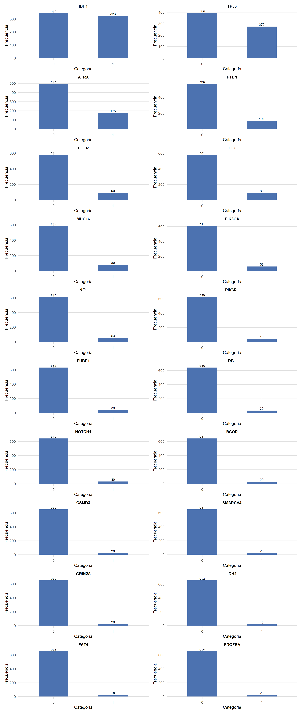
tabla_genes_univ <- map_dfr(variables_geneticas, function(v) {
tabla <- train_data |> count(.data[[v]])
tibble(
Gen = v,
Frecuencia_mutacion = tabla$n[tabla[[v]] == "1"],
Porcentaje = round(tabla$n[tabla[[v]] == "1"] / sum(tabla$n) * 100, 2)
)
}) |> arrange(desc(Porcentaje))
kable(tabla_genes_univ,
col.names = c("Gen", "Frecuencia de mutación", "Porcentaje (%)"),
caption = "Frecuencia de mutación por gen (Train Set), ordenada de mayor a menor.") |>
kable_styling(bootstrap_options = c("striped", "hover", "condensed"), full_width = FALSE)| Gen | Frecuencia de mutación | Porcentaje (%) |
|---|---|---|
| IDH1 | 323 | 48.21 |
| TP53 | 275 | 41.04 |
| ATRX | 175 | 26.12 |
| PTEN | 101 | 15.07 |
| EGFR | 90 | 13.43 |
| CIC | 89 | 13.28 |
| MUC16 | 80 | 11.94 |
| PIK3CA | 59 | 8.81 |
| NF1 | 53 | 7.91 |
| PIK3R1 | 40 | 5.97 |
| FUBP1 | 38 | 5.67 |
| RB1 | 30 | 4.48 |
| NOTCH1 | 30 | 4.48 |
| BCOR | 29 | 4.33 |
| SMARCA4 | 23 | 3.43 |
| CSMD3 | 20 | 2.99 |
| GRIN2A | 20 | 2.99 |
| PDGFRA | 20 | 2.99 |
| IDH2 | 18 | 2.69 |
| FAT4 | 18 | 2.69 |
Las variables genéticas presentan una distribución predominantemente concentrada en la categoría 0, correspondiente a la ausencia de mutación, mientras que la categoría 1 representa su presencia.
Entre los genes analizados, IDH1 presenta la mayor proporción de casos con mutación, con 322 registros (47,99 %), seguido de TP53, con 270 registros (40,24 %). A continuación se encuentran ATRX con 25,63 %, PTEN con 16,84 %, CIC con 13,71 %, EGFR con 11,62 % y MUC16 con 11,03 %. En un nivel intermedio se encuentran PIK3CA (8,49 %), NF1 (8,35 %) y FUBP1 (6,26 %), mientras que PIK3R1 (5,81 %), RB1 (4,92 %) y NOTCH1 (4,92 %) presentan proporciones inferiores al 6 %. Finalmente, genes como CSMD3 (3,43 %), SMARCA4 (3,43 %), IDH2 (3,13 %), BCOR (3,28 %), GRIN2A (2,83 %), FAT4 (2,68 %) y PDGFRA (2,68 %) muestran una presencia de mutaciones relativamente baja en el conjunto analizado.
En términos generales, se observa una alta variabilidad en la frecuencia de las mutaciones entre los genes, con una mayor concentración en IDH1 y TP53 y una presencia considerablemente menor en los genes restantes. Esto evidencia que las alteraciones genéticas no se distribuyen de manera uniforme en la muestra y que algunos genes presentan una representación mutacional mucho mayor que otros.
2.5 Análisis Bivariado
En esta sección se analiza la relación entre las variables independientes y la variable objetivo Grade, considerando tanto variables categóricas como numéricas. Para las variables categóricas se examinan las frecuencias absolutas y relativas de sus categorías según cada nivel de Grade, complementando las comparaciones mediante gráficos de barras agrupadas. Para la variable numérica Age_at_diagnosis, se analiza y compara su distribución entre los grupos de Grade mediante estadísticos descriptivos y gráficos de caja. Finalmente, se realiza un análisis de correlación entre las variables numéricas para evaluar la intensidad y dirección de las relaciones entre ellas.
2.5.1 Grade - Age_at_diagnosis
medias <- train_data |> group_by(Grade) |> summarise(media = mean(Age_at_diagnosis))
ggplot(train_data, aes(x = Grade, y = Age_at_diagnosis)) +
geom_boxplot(fill = "#1E90FF", alpha = 0.6, color = "black") +
geom_point(data = medias, aes(x = Grade, y = media), color = "red", size = 3) +
labs(title = "Distribución de la edad según el grado del tumor",
x = "Grado del tumor (Grade)", y = "Edad al diagnóstico")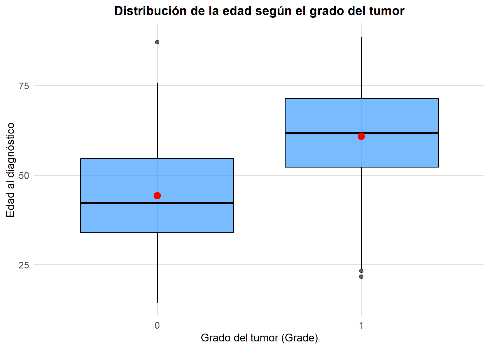
age_grade <- train_data |>
group_by(Grade) |>
summarise(
n = n(),
media = mean(Age_at_diagnosis),
ds = sd(Age_at_diagnosis),
mediana = median(Age_at_diagnosis),
minimo = min(Age_at_diagnosis),
maximo = max(Age_at_diagnosis),
Q1 = quantile(Age_at_diagnosis, 0.25),
Q3 = quantile(Age_at_diagnosis, 0.75),
IQR = Q3 - Q1
) |>
mutate(variable = "Age_at_diagnosis", niveles = as.character(Grade)) |>
select(variable, niveles, Grade, n, media, ds, mediana, minimo, maximo, Q1, Q3, IQR)
kable(age_grade, digits = 2, caption = "Estadística descriptiva de Age_at_diagnosis por nivel de Grade.") |>
kable_styling(bootstrap_options = c("striped", "condensed"), full_width = TRUE) |>
scroll_box(width = "100%")| variable | niveles | Grade | n | media | ds | mediana | minimo | maximo | Q1 | Q3 | IQR |
|---|---|---|---|---|---|---|---|---|---|---|---|
| Age_at_diagnosis | 0 | 0 | 389 | 44.24 | 13.60 | 42.25 | 14.42 | 87.00 | 33.91 | 54.61 | 20.70 |
| Age_at_diagnosis | 1 | 1 | 281 | 60.81 | 13.75 | 61.68 | 21.73 | 88.57 | 52.27 | 71.41 | 19.14 |
El análisis bivariado de la edad al diagnóstico (Age_at_diagnosis) según el grado del tumor (Grade) muestra una clara separación clínico-demográfica entre los Gliomas de Bajo Grado (LGG / Grado 0) y el Glioblastoma Multiforme (GBM / Grado 1).
Distribución Estadística
Glioma de Bajo Grado (LGG / Grado 0): En la muestra de 389 pacientes, la edad promedio al diagnóstico es de 44,10 ± 13,20 años y la mediana alcanza los 41,89 años. El 50% central de los pacientes se concentra entre los 33,91 (\(Q_1\)) y 54,27 años (\(Q_3\)), registrando un rango intercuartílico (IQR) de 20,36 años.
Glioblastoma Multiforme (GBM / Grado 1): En el grupo de 282 pacientes, la media asciende a 60,75 ± 13,45 años, con una mediana de 61,49 años. Su intervalo intercuartílico se ubica entre los 52,75 (\(Q_1\)) y 69,88 años (\(Q_3\)), representando un IQR de 17,13 años.
Separación de Poblaciones y Análisis de Outliers
Existe una baja superposición en el núcleo de ambas distribuciones. El 75% de los pacientes diagnosticados con LGG tiene 54,27 años o menos, mientras que el 75% de los casos de GBM presenta una edad de diagnóstico igual o superior a 52,75 años. Esto evidencia una diferencia importante en la edad de diagnóstico entre ambos niveles de Grade, con una mayor concentración de edades en los pacientes con GBM.
En el análisis univariado de Age_at_diagnosis, considerando la distribución global de todos los pacientes, no se identificaron valores atípicos mediante el criterio del rango intercuartílico (IQR). Sin embargo, al analizar la edad de manera bivariada según Grade, sí aparecen observaciones que pueden clasificarse como outliers dentro de los grupos individuales. Esto ocurre porque cada nivel de Grade presenta su propia distribución, con diferentes valores de \(Q_1\), \(Q_3\) e IQR; por lo tanto, una edad que se encuentra dentro del rango esperado de la población total puede resultar extrema cuando se compara únicamente con la distribución de su grupo.
Valores Atípicos en Grado 0: Se identifica un valor atípico superior de 87 años, que resulta inusual dentro de la distribución de edades de los pacientes con LGG.
Valores Atípicos en Grado 1: El grupo GBM presenta valores atípicos inferiores entre 21,73 y 25,20 años, correspondientes a edades considerablemente menores que las habituales dentro de este grupo y que representan casos poco frecuentes de glioblastoma en adultos jóvenes.
2.5.1.1 Prueba U de Mann–Whitney
Para evaluar si existen diferencias estadísticamente significativas en la edad al diagnóstico entre los grupos de Grade, se utiliza la prueba U de Mann–Whitney, debido a que la variable Age_at_diagnosis no presenta una distribución normal según la prueba de Shapiro-Wilk.
Hipótesis nula (\(H_0\)): no existen diferencias estadísticamente significativas en la distribución de
Age_at_diagnosisentre los gruposGrade = 0yGrade = 1.Hipótesis alternativa (\(H_1\)): existen diferencias estadísticamente significativas en la distribución de
Age_at_diagnosisentre los gruposGrade = 0yGrade = 1.
Se utiliza un nivel de significancia de \(\alpha = 0,05\).
grupo_0 <- train_data |> filter(Grade == 0) |> pull(Age_at_diagnosis)
grupo_1 <- train_data |> filter(Grade == 1) |> pull(Age_at_diagnosis)
mw_test <- wilcox.test(grupo_0, grupo_1, alternative = "two.sided", exact = FALSE)
cat(sprintf("Estadístico U: %.4f\n", mw_test$statistic))## Estadístico U: 21717.5000## p-value: 0.0000El resultado obtenido fue un estadístico U de 21042,5 y un p-value < 0,0001, por lo que, considerando un nivel de significancia de \(\alpha = 0,05\), se rechaza la hipótesis nula. Esto indica que existe una diferencia estadísticamente significativa en la distribución de la variable entre los grupos LGG y GBM. Por lo tanto, los resultados sugieren que esta variable presenta un comportamiento diferente según el grado del glioma, aunque la prueba por sí sola no permite establecer una relación causal.
analisis_bivariado <- function(df, target, variable, etiquetas = NULL,
titulo = NULL, xlabel = NULL) {
df_plot <- df |>
count(.data[[target]], .data[[variable]], name = "n") |>
group_by(.data[[target]]) |>
mutate(porcentaje = round(n / sum(n) * 100, 1)) |>
ungroup() |>
rename(categoria = all_of(variable))
if (!is.null(etiquetas)) {
df_plot$categoria <- dplyr::recode(
as.character(df_plot$categoria),
!!!etiquetas
)
}
if (is.null(titulo)) titulo <- sprintf("Distribución de %s según %s", variable, target)
if (is.null(xlabel)) xlabel <- variable
p <- ggplot(df_plot, aes(x = categoria, y = n, fill = .data[[target]])) +
geom_col(position = position_dodge(width = 0.8), width = 0.7) +
geom_text(aes(label = sprintf("%d (%.1f%%)", n, porcentaje)),
position = position_dodge(width = 0.8), vjust = -0.4, size = 3) +
scale_fill_manual(values = PALETTE_GRADE, labels = c("Grade 0", "Grade 1")) +
scale_y_continuous(expand = expansion(mult = c(0, 0.18))) +
labs(title = titulo, x = xlabel, y = "Cantidad de pacientes", fill = target)
list(tabla = df_plot, grafico = p)
}2.5.2 Grade - Gender
res_gender <- analisis_bivariado(
train_data, target = "Grade", variable = "Gender",
etiquetas = c("0" = "Hombre", "1" = "Mujer"),
titulo = "Distribución del género según Grade", xlabel = "Género"
)
res_gender$grafico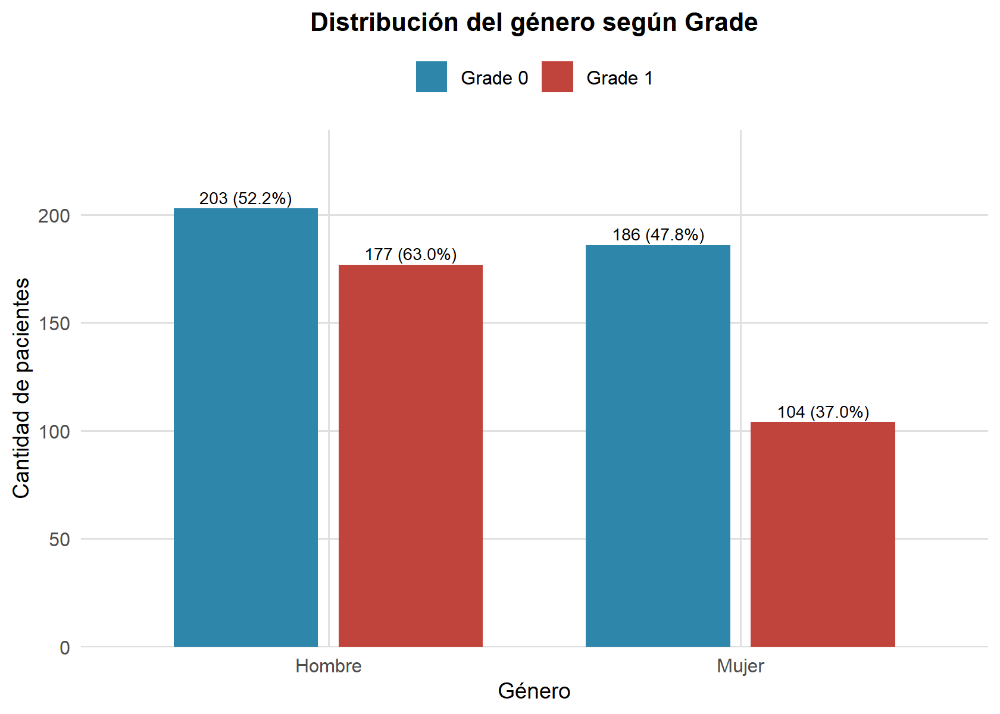
La distribución del género presenta diferencias entre los dos niveles de Grade. En Grade 0, se registran 220 hombres (56,6%) y 169 mujeres (43,4%), mientras que en Grade 1 se observan 178 hombres (63,1%) y 104 mujeres (36,9%). En ambos niveles predomina el género masculino; sin embargo, esta predominancia es mayor en Grade 1, donde los hombres representan el 63,1% frente al 56,6% en Grade 0. Por otro lado, la proporción de mujeres disminuye de 43,4% en Grade 0 a 36,9% en Grade 1. En términos descriptivos, estos resultados sugieren una mayor representación masculina en Grade 1, aunque las diferencias observadas no permiten establecer por sí solas una asociación estadísticamente significativa entre el género y Grade.
2.5.2.1 Prueba de independencia: \(\chi^2\)
En este caso, se analiza la relación entre Gender y Grade mediante una prueba de independencia de Chi-cuadrado (\(\chi^2\)).
Se utiliza un nivel de significancia de \(\alpha = 0,05\):
Hipótesis nula (\(H_0\)):
GenderyGradeson independientes; no existe una asociación estadísticamente significativa entre ambas variables.Hipótesis alternativa (\(H_1\)):
GenderyGradeno son independientes; existe una asociación estadísticamente significativa entre ambas variables.
tabla_gender_grade <- table(train_data$Gender, train_data$Grade)
chi2_gender <- chisq.test(tabla_gender_grade, correct = FALSE)
cat(sprintf("\nEstadístico χ²: %.4f\n", chi2_gender$statistic))##
## Estadístico χ²: 7.7578## p-value: 0.0053## Grados de libertad: 1Con un nivel de significancia de \(\alpha = 0,05\), el estadístico de Chi-cuadrado obtenido fue \(\chi^2(1) = 2,6543\), con un p-value de \(0,1033\). Debido a que \(p = 0,1033 > 0,05\), no se rechaza la hipótesis nula (\(H_0\)). Por lo tanto, no se encuentra evidencia estadísticamente significativa de una asociación entre Gender y Grade en el conjunto de datos analizado; es decir, los resultados son compatibles con la independencia entre ambas variables.
2.5.3 Grade - Race
res_race <- analisis_bivariado(
train_data, target = "Grade", variable = "Race",
etiquetas = c("0" = "White", "1" = "Black or African American",
"2" = "Asian", "3" = "American Indian"),
titulo = "Distribución del grupo racial según Grade", xlabel = "Grupo racial"
)
res_race$grafico + scale_x_discrete(labels = label_wrap(10))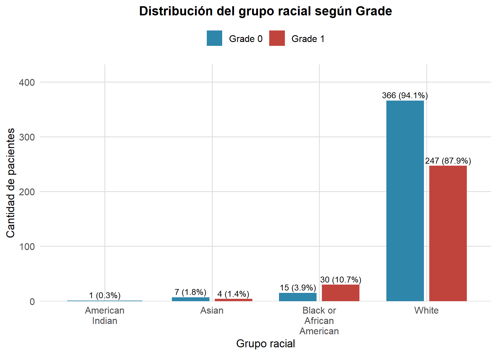
La distribución por grupo racial muestra un predominio marcado de la población blanca en ambos niveles de Grade. En Grade 0, el grupo White concentra 365 pacientes (93,8%), mientras que en Grade 1 representa 246 pacientes (87,2%). El grupo Black or African American constituye el segundo grupo con mayor representación, con 16 pacientes (4,1%) en Grade 0 y 30 pacientes (10,6%) en Grade 1. Por su parte, la población asiática presenta una participación reducida, con 7 casos (1,8%) en Grade 0 y 6 casos (2,1%) en Grade 1, mientras que American Indian or Alaska Native presenta una ocurrencia prácticamente nula, con 1 caso (0,3%) en Grade 0 y ningún caso en Grade 1.
En términos comparativos, se observa que la proporción del grupo White disminuye en Grade 1, pasando de 93,8% a 87,2%, mientras que el grupo Black or African American aumenta de 4,1% a 10,6%.
Además, si bien existen diferencias en la distribución de los grupos raciales entre los niveles de Grade, estos resultados deben analizarse con precaución, ya que la muestra está fuertemente concentrada en el grupo White y algunas de las demás categorías presentan muy pocas observaciones.
2.5.3.1 Prueba de independencia: \(\chi^2\)
Para realizar la prueba de independencia entre Grade y Race, se decidió reagrupar las categorías de la variable racial debido a las bajas frecuencias observadas en algunos grupos. En particular, las categorías Asian y American Indian or Alaska Native presentan un número reducido de observaciones, lo que puede generar frecuencias esperadas demasiado bajas y afectar la validez de la prueba estadística.
Por esta razón, se mantuvo la categoría White, que representa la mayoría de los registros, y se agruparon Black or African American, Asian y American Indian or Alaska Native en una nueva categoría denominada Other racial groups.
De esta manera, la variable Race queda conformada por dos categorías: White y Other racial groups, permitiendo realizar la prueba de independencia con una distribución de frecuencias más adecuada.
race_agrupada <- dplyr::recode(
as.character(train_data$Race),
"0" = "White",
"1" = "Other racial groups",
"2" = "Other racial groups",
"3" = "Other racial groups"
)
tabla_race_agg <- table(train_data$Grade, race_agrupada)
kable(
tabla_race_agg,
caption = "Tabla de contingencia Grade x Race (agrupada)."
) |>
kable_styling(
bootstrap_options = c("striped", "condensed"),
full_width = FALSE
)| Other racial groups | White | |
|---|---|---|
| 0 | 23 | 366 |
| 1 | 34 | 247 |
chi2_race <- chisq.test(tabla_race_agg, correct = FALSE)
cat(sprintf("Chi-cuadrado: %.4f\n", chi2_race$statistic))## Chi-cuadrado: 8.0235## Grados de libertad: 1## Valor p: 0.0046Dado que el valor p = 0,0048 es menor que el nivel de significancia de 0.05, se rechaza la hipótesis nula de independencia. Por lo tanto, existe evidencia estadísticamente significativa de una asociación entre Grade y Race en el conjunto de datos.
Esto indica que la distribución de los pacientes entre LGG (Grade 0) y GBM (Grade 1) presenta diferencias según el grupo racial considerado. Sin embargo, este resultado debe interpretarse con cautela, ya que la variable Race fue previamente agrupada en White y Other racial groups debido a las bajas frecuencias de algunas categorías originales.
Es importante señalar que la prueba de independencia permite identificar una asociación estadística, pero no implica que el grupo racial sea la causa de las diferencias observadas en el grado tumoral.
2.5.4 Grade - variables genéticas
Se analiza la distribución de las variables genéticas según los niveles de Grade, diferenciando entre pacientes con glioma de bajo grado (LGG, Grade 0) y glioblastoma (GBM, Grade 1). Esta comparación permite identificar diferencias descriptivas en la presencia o ausencia de mutaciones entre ambos grupos.
prueba_independencia <- function(df, target, variable, alpha = 0.05) {
tabla <- table(df[[variable]], df[[target]])
chi2_res <- suppressWarnings(chisq.test(tabla, correct = FALSE))
esperadas <- chi2_res$expected
usar_fisher <- all(dim(tabla) == c(2, 2)) && any(esperadas < 5)
if (usar_fisher) {
fisher_res <- fisher.test(tabla)
p_valor <- fisher_res$p.value
test_usado <- "Fisher exacto"
chi2_stat <- NA
dof <- NA
} else {
p_valor <- chi2_res$p.value
test_usado <- "Chi-cuadrado"
chi2_stat <- unname(chi2_res$statistic)
dof <- unname(chi2_res$parameter)
}
list(
variable = variable,
test = test_usado,
chi2 = chi2_stat,
dof = dof,
p_value = p_valor,
expected_min = min(esperadas),
significativo = p_valor < alpha
)
}for (gen in names(interpretaciones_genes)) {
cat(sprintf("\n\n#### `%s`\n\n", gen))
cat(interpretaciones_genes[[gen]], "\n\n")
res <- analisis_bivariado(
train_data, target = "Grade", variable = gen,
etiquetas = c("0" = "Ausencia", "1" = "Presencia"),
titulo = sprintf("Distribución de %s según Grade", gen),
xlabel = gen
)
print(res$grafico)
test <- prueba_independencia(train_data, target = "Grade", variable = gen)
estadistico_str <- if (test$test == "Chi-cuadrado") {
sprintf("χ²(%d) = %.4f", test$dof, test$chi2)
} else {
"Fisher exacto (frecuencia esperada < 5)"
}
conclusion <- if (test$significativo) {
"se rechaza H₀: existe asociación estadísticamente significativa"
} else {
"no se rechaza H₀: no hay evidencia de asociación significativa"
}
color_res <- if (test$significativo) "#1a7f37" else "#6e7781"
cat(sprintf(
'<div style="margin: 10px 0 24px 0; padding: 10px 14px; border-left: 4px solid %s; background-color: rgba(110,119,129,0.08); border-radius: 4px; font-size: 14px;"><b>Prueba de independencia (%s):</b> %s, p-value = %.4f → <span style="color:%s; font-weight:600;">%s</span> (α = 0.05)</div>\n\n',
color_res, test$test, estadistico_str, test$p_value, color_res, conclusion
))
}2.5.4.1 IDH1
Al comparar la presencia de la mutación en IDH1 entre los dos niveles de Grade, se observa una diferencia bastante marcada. En los LGG (Grade 0), 303 pacientes (77,9%) presentan la mutación de IDH1, mientras que 86 pacientes (22,1%) no presentan la mutación. En contraste, en los GBM (Grade 1), solamente 19 pacientes (6,7%) presentan la mutación, mientras que 263 pacientes (93,3%) no la presentan.
Esto muestra un patrón muy marcado donde la mutación de IDH1 es mucho más frecuente en los LGG que en los GBM. En los LGG, aproximadamente 8 de cada 10 pacientes presentan la mutación, mientras que en los GBM ocurre en aproximadamente 7 de cada 100 pacientes. Por el contrario, la ausencia de la mutación predomina ampliamente en los GBM.
Desde una perspectiva descriptiva, estos resultados sugieren que la presencia de la mutación IDH1 está fuertemente asociada con los LGG en este conjunto de datos, mientras que su ausencia caracteriza en mayor proporción a los GBM.
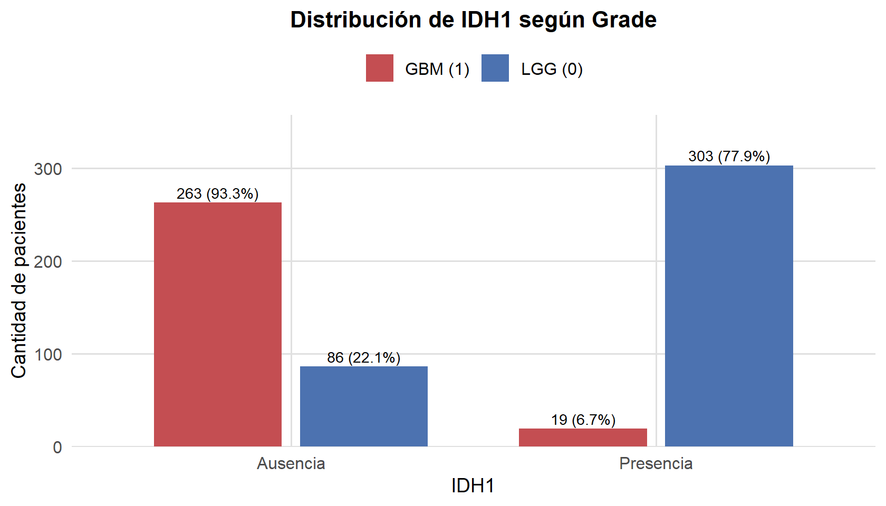
2.5.4.2 TP53
Al comparar la presencia de la mutación en TP53 entre los dos niveles de Grade, se observa una diferencia en su distribución. En los LGG (Grade 0), 177 pacientes (45,5 %) presentan la mutación de TP53, mientras que 212 pacientes (54,5 %) no la presentan. En contraste, en los GBM (Grade 1), 93 pacientes (33,0 %) presentan la mutación, mientras que 189 pacientes (67,0 %) no presentan la mutación.
Estos resultados muestran que la ausencia de la mutación TP53 predomina en ambos grupos, aunque es más frecuente en los GBM. En los LGG, aproximadamente 5 de cada 10 pacientes presentan la mutación, mientras que en los GBM la presentan aproximadamente 3 de cada 10 pacientes. Por otro lado, la presencia de TP53 es relativamente mayor en los LGG que en los GBM.
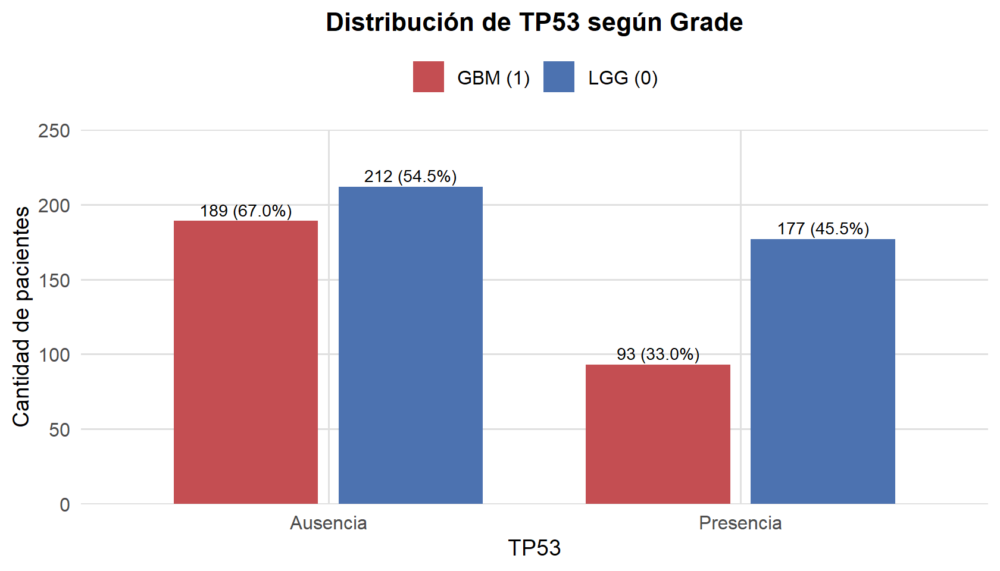
2.5.4.3 ATRX
La gráfica muestra una diferencia clara en la distribución de la mutación de ATRX entre los dos grados de glioma. En el Grado 0, la ausencia de mutación de ATRX es mayoritaria ya que se observa en 242 pacientes (62,2%), mientras que la presencia de la mutación aparece en 147 pacientes (37,8%).
En contraste, en el Grado 1, la ausencia de mutación de ATRX es todavía más predominante, con 257 pacientes (91,1%), mientras que únicamente 25 pacientes (8,9%) presentan la mutación.
Esto indica que la presencia de una mutación en ATRX está considerablemente más representada en el Grado 0 que en el Grado 1. En términos relativos, la mutación aparece en el 37,8% de los pacientes de Grado 0 frente al 8,9% de los pacientes de Grado 1. Por tanto, existe una diferencia importante en la distribución de ATRX entre ambas clases.
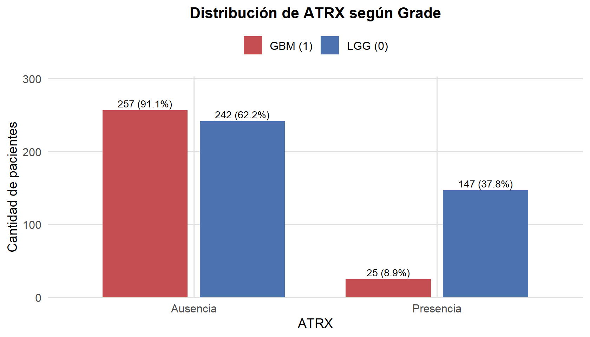
2.5.4.4 PTEN
En la gráfica, para el Grado 0, la ausencia de mutación en PTEN es predominante, con 369 pacientes (94,9%), mientras que únicamente 20 pacientes (5,1%) presentan la mutación. En cambio, en el Grado 1, aunque la ausencia continúa siendo mayoritaria, su proporción disminuye considerablemente hasta 189 pacientes (67,0%), mientras que la presencia de la mutación aumenta hasta 93 pacientes (33,0%).
Por lo tanto, se observa que la mutación de PTEN está considerablemente más representada en el Grado 1. Comparando las proporciones, la presencia de PTEN pasa de 5,1% en Grado 0 a 33,0% en Grado 1, lo que representa una diferencia de 27,9 puntos porcentuales.
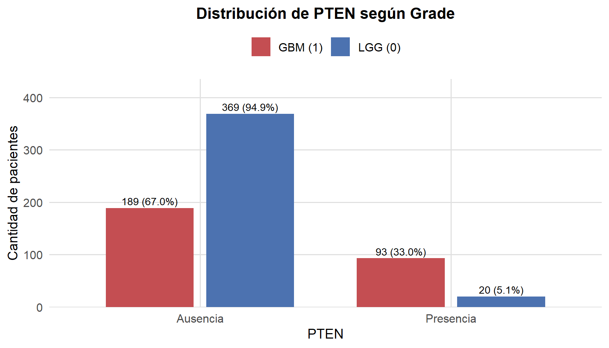
2.5.4.5 EGFR
En el Grado 0, la ausencia de mutación de EGFR es predominante, con 366 pacientes (94,1%), mientras que solo 23 pacientes (5,9%) presentan la mutación. Para el Grado 1, la ausencia también es mayoritaria, pero disminuye a 227 pacientes (80,5%), mientras que la presencia de la mutación aumenta a 55 pacientes (19,5%).
Por lo tanto, se observa que la presencia de la mutación en EGFR es más frecuente en el Grado 1. La proporción de pacientes con EGFR mutado pasa de 5,9% en el Grado 0 a 19,5% en el Grado 1, lo que representa un incremento de 13,6 puntos porcentuales.
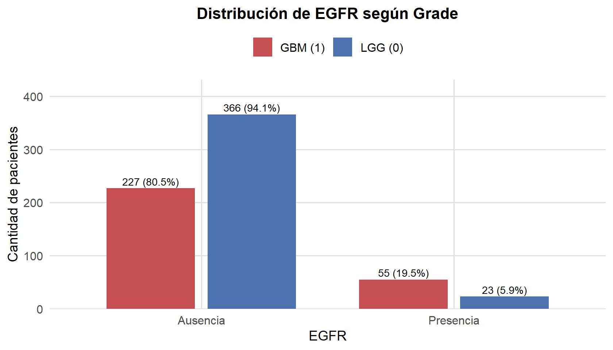
2.5.4.6 CIC
Para el caso del gen CIC, en el Grado 0, la ausencia de mutación es mayoritaria, con 300 pacientes (77,1%), mientras que 89 pacientes (22,9%) presentan la mutación. En el Grado 1, la ausencia de mutación aumenta considerablemente hasta 279 pacientes (98,9%), mientras que solamente 3 pacientes (1,1%) presentan una mutación en CIC.
Por tanto, la presencia de la mutación en CIC es mucho más frecuente en el Grado 0. La proporción disminuye de 22,9% en el Grado 0 a apenas 1,1% en el Grado 1, lo que representa una diferencia de 21,8 puntos porcentuales.
Este comportamiento resulta especialmente interesante para el análisis de clasificación, ya que la distribución de CIC cambia considerablemente entre las dos clases. En particular, la presencia de mutación en CIC parece estar asociada con el Grado 0, mientras que su ausencia está presente en prácticamente todos los pacientes de Grado 1. Esto sugiere que CIC podría ser una variable con un alto poder discriminativo para diferenciar ambas categorías.
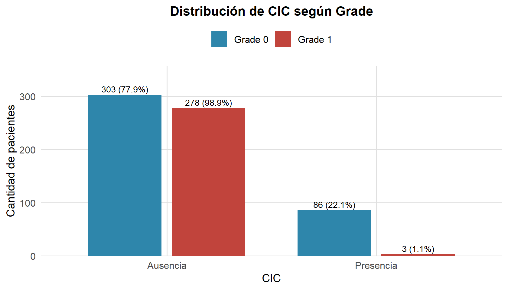
2.5.4.7 MUC16
La gráfica muestra la distribución de la mutación de MUC16 en los pacientes de Grado 0 y Grado 1. En ambos grupos predomina la ausencia de la mutación, aunque se observa una diferencia en la proporción de pacientes que presentan la alteración.
En el Grado 0, la ausencia corresponde a 358 pacientes (92,0%), mientras que 31 pacientes (8,0%) presentan la mutación. En el Grado 1, la ausencia se presenta en 239 pacientes (84,8%), mientras que 43 pacientes (15,2%) presentan la mutación.
Por tanto, la presencia de la mutación de MUC16 es más frecuente en el Grado 1. La proporción aumenta de 8,0% en el Grado 0 a 15,2% en el Grado 1, lo que representa una diferencia de 7,2 puntos porcentuales.
A diferencia de variables como PTEN o CIC, la diferencia entre ambos grados en MUC16 es más moderada. Esto sugiere que MUC16 podría aportar cierta información para diferenciar las clases, pero su capacidad discriminativa individual parece menor a partir de esta distribución.
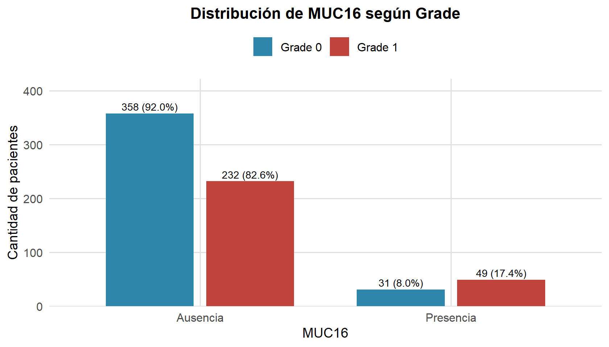
2.5.4.8 PIK3CA
La distribución de PIK3CA es bastante similar entre los dos grupos de Grade. La ausencia de la alteración es predominante tanto en Grade 0 (92,3 %) como en Grade 1 (90,4 %), mientras que su presencia representa únicamente el 7,7 % y 9,6 %, respectivamente. Aunque se observa una proporción ligeramente mayor de presencia de mutación de PIK3CA en Grade 1, la diferencia es pequeña (1,9 puntos porcentuales). Por lo tanto, a partir de esta comparación descriptiva, PIK3CA no presenta una diferencia marcada entre ambos grados.
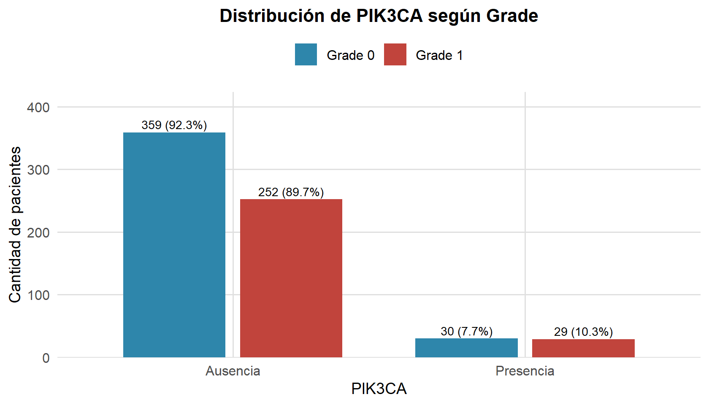
2.5.4.9 NF1
La distribución de mutación de NF1 presenta una ligera diferencia entre los grupos de Grade. La presencia de mutación de NF1 es mayor en Grade 1 (10,6 %) que en Grade 0 (6,7 %), mientras que la ausencia es predominante en ambos grupos. Esta diferencia de 3,9 puntos porcentuales sugiere una posible mayor frecuencia de alteraciones en NF1 en los pacientes de Grade 1. Sin embargo, debido a que la diferencia entre ambos grupos es relativamente pequeña y la ausencia de mutación de NF1 predomina ampliamente, no se observa una separación marcada entre los grados a partir de esta variable.
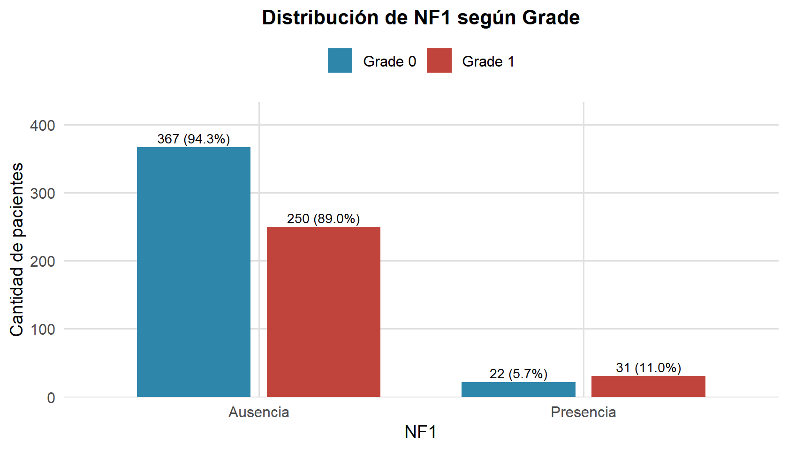
2.5.4.10 PIK3R1
La distribución de PIK3R1 muestra una diferencia entre los grupos de Grade. La presencia de esta alteración es mayor en Grade 1 (8,5 %) que en Grade 0 (3,9 %), con una diferencia de 4,6 puntos porcentuales. Sin embargo, la ausencia de alteración del gen PIK3R1 predomina claramente en ambos grupos, representando el 96,1 % de los casos en Grade 0 y el 91,5 % en Grade 1.
Por lo tanto, aunque se observa una mayor frecuencia de presencia de PIK3R1 en Grade 1, la diferencia no es lo suficientemente marcada como para observar una separación clara entre los dos grupos únicamente mediante este análisis descriptivo.
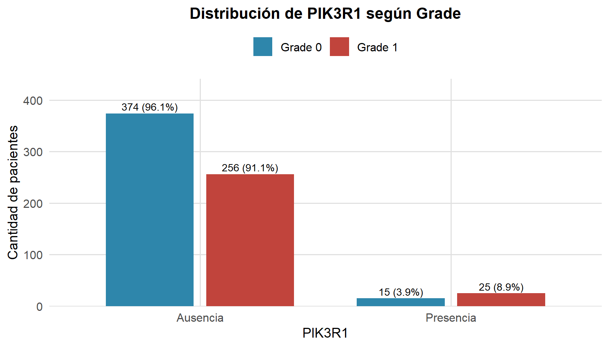
2.5.4.11 FUBP1
En términos descriptivos, FUBP1 presenta una distribución claramente diferente según el Grade. En Grade 0, la presencia de mutación de FUBP1 alcanza el 10,3 % de los pacientes, mientras que en Grade 1 esta proporción disminuye considerablemente hasta el 0,7 %. De manera consecuente, la ausencia de la variable es predominante en ambos grupos, aunque es especialmente alta en Grade 1, donde alcanza el 99,3 %. Esta diferencia de 9,6 puntos porcentuales en la presencia de FUBP1 sugiere que esta variable podría estar relacionada con la clasificación del grado tumoral y podría aportar información para diferenciar entre ambos grupos.
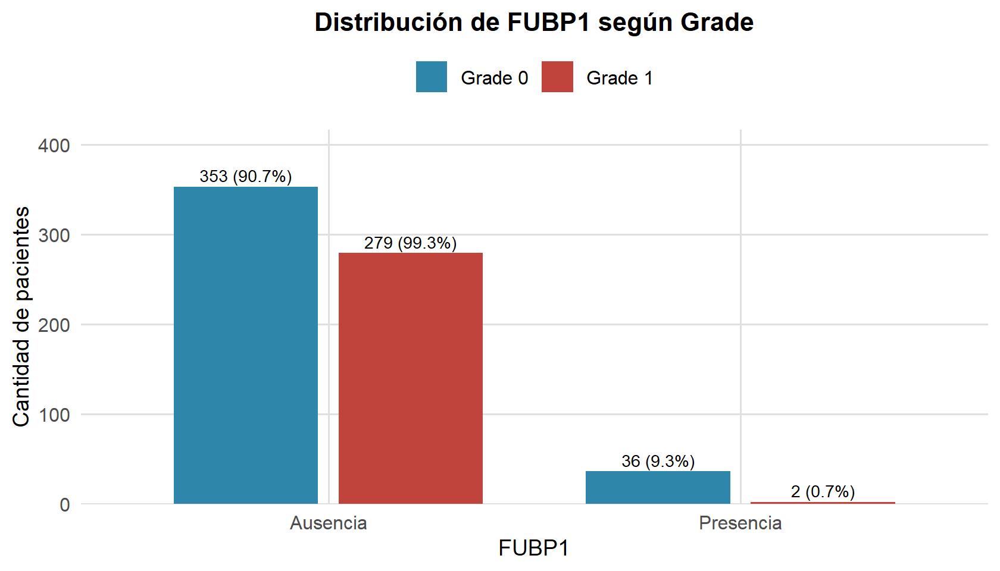
2.5.4.12 RB1
La gráfica muestra la distribución de RB1 entre los dos grupos de Grade y permite observar una diferencia apreciable en la frecuencia de esta variable. En Grade 0, la ausencia de mutación de RB1 representa el 98,5 % de los pacientes (383 casos), mientras que únicamente el 1,5 % presenta mutación de RB1 (6 casos). Por otro lado, en Grade 1, la ausencia corresponde al 90,4 % (255 casos), mientras que la presencia aumenta hasta el 9,6 % (27 casos).
Por lo tanto, la presencia de mutación de RB1 es considerablemente más frecuente en Grade 1, donde alcanza el 9,6 %, frente al 1,5 % observado en Grade 0. Esto supone una diferencia de aproximadamente 8,1 puntos porcentuales. Aunque la ausencia continúa siendo la categoría predominante en ambos grupos, el aumento de la presencia de alteración del gen RB1 en Grade 1 genera una separación bastante visible entre las distribuciones.
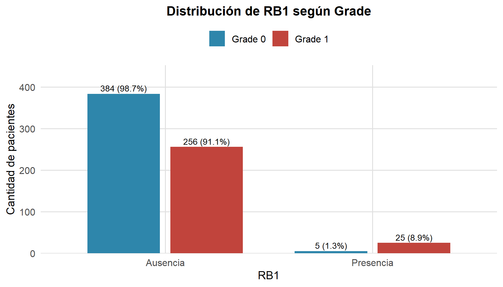
2.5.4.13 NOTCH1
En términos descriptivos, NOTCH1 presenta una distribución claramente diferenciada según el Grade. En Grade 0, el 8,5 % de los pacientes presenta mutación de NOTCH1, mientras que en Grade 1 no se observa ningún caso con presencia de esta variable. Por otro lado, la ausencia de alteración de NOTCH1 es predominante en ambos grupos, aunque alcanza el 100 % en Grade 1. Esta diferencia sugiere que la presencia de mutación de NOTCH1 podría estar relacionada con la clasificación del grado tumoral y podría ser una característica útil para distinguir entre ambos grupos.
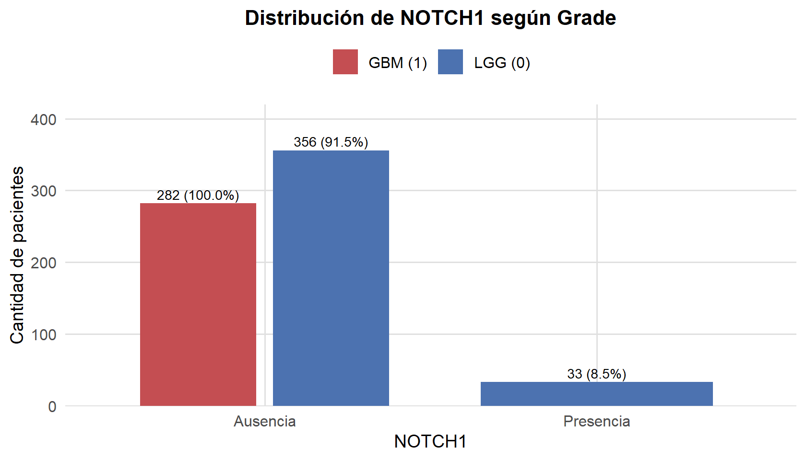
2.5.4.14 BCOR
La gráfica muestra la distribución de BCOR según el Grade y, a diferencia de algunas de las variables anteriores, presenta un comportamiento muy similar entre ambos grupos. En Grade 0, el 96,7 % de los pacientes presenta ausencia de mutación de BCOR (376 casos), mientras que el 3,3 % presenta su presencia (13 casos). En Grade 1, la ausencia corresponde al 96,8 % (273 casos) y la presencia al 3,2 % (9 casos).
Las proporciones son prácticamente iguales entre los dos grados. La presencia de alteración del gen BCOR solo difiere en 0,1 puntos porcentuales, siendo ligeramente mayor en Grade 0 (3,3 %) que en Grade 1 (3,2 %). De manera similar, la ausencia presenta una diferencia mínima de 0,1 puntos porcentuales. Esto indica que no existe una separación visual relevante entre los grupos respecto a esta variable.
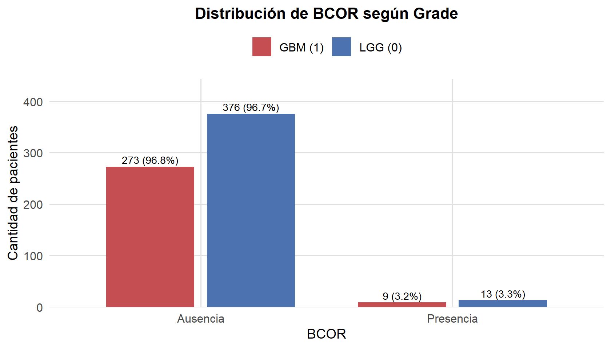
2.5.4.15 CSMD3
En términos descriptivos, CSMD3 presenta una distribución bastante similar entre los dos niveles de Grade. La presencia de esta variable es ligeramente mayor en Grade 1 (4,3 %) que en Grade 0 (2,8 %), mientras que la ausencia se mantiene como la categoría predominante, con 95,7 % y 97,2 %, respectivamente. Aunque este comportamiento muestra una pequeña diferencia entre los grupos, la magnitud de la variación es reducida, por lo que no se aprecia una separación marcada entre Grade 0 y Grade 1 a partir de CSMD3.
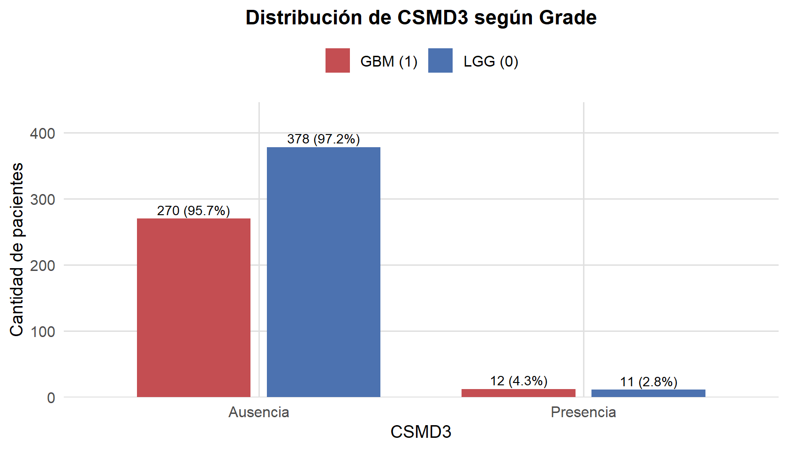
2.5.4.16 SMARCA4
La distribución de SMARCA4 muestra algunas diferencias entre los dos grupos de Grade. En Grade 0, la presencia de mutación de SMARCA4 se encuentra en el 4,9 % de los pacientes, mientras que en Grade 1 solamente alcanza el 1,4 %. Esto significa que la presencia de esta variable es aproximadamente 3,5 puntos porcentuales mayor en Grade 0. En ambos grupos, sin embargo, predomina ampliamente la ausencia de mutación de SMARCA4, especialmente en Grade 1, donde representa el 98,6 % de los casos. En consecuencia, aunque se observa una tendencia hacia una mayor presencia de mutación de SMARCA4 en Grade 0, la diferencia entre los grupos es moderada y no permite considerar por sí sola a esta variable como un diferenciador fuerte del grado tumoral.
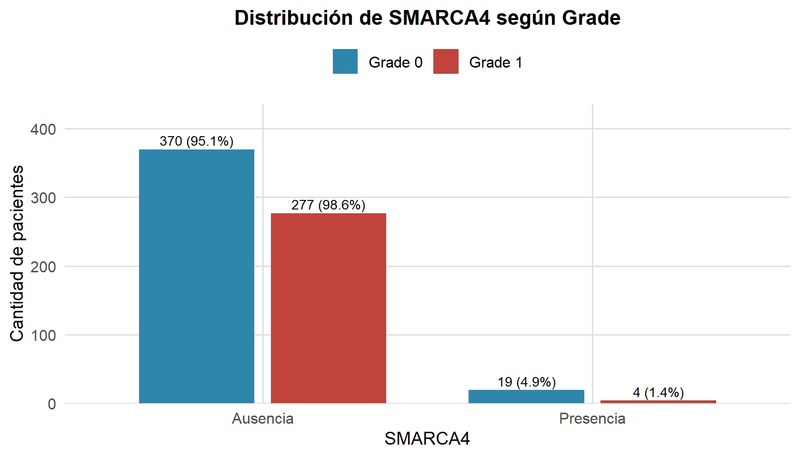
2.5.4.17 GRIN2A
La distribución de GRIN2A muestra que la ausencia de mutación es predominante tanto en los pacientes de Grade 0 como en los de Grade 1, con 98.7% y 95.0% de los casos, respectivamente. En contraste, la presencia de la mutación es poco frecuente en ambos grupos, aunque presenta una mayor proporción en Grade 1 (5.0%) frente a Grade 0 (1.3%), lo que representa una diferencia de 3.7 puntos porcentuales. Esta diferencia descriptiva indica una mayor frecuencia relativa de mutaciones en GRIN2A entre los pacientes de Grade 1; sin embargo, debido a la baja cantidad de casos con presencia de la mutación, no es suficiente para establecer por sí sola una asociación con el grado tumoral.
2.5.4.18 IDH2
La distribución de IDH2 muestra una diferencia bastante marcada entre los dos grupos de Grade. En Grade 0, la presencia de mutación de IDH2 corresponde al 4,9 % de los pacientes (19 casos), mientras que en Grade 1 solamente se presenta en el 0,7 % (2 casos). Por el contrario, la ausencia de esta variable es muy elevada en ambos grupos, aunque es ligeramente mayor en Grade 1, donde alcanza el 99,3 %, frente al 95,1 % observado en Grade 0.
La diferencia en la presencia de IDH2 es de 4,2 puntos porcentuales, lo que indica que esta característica aparece con mayor frecuencia en Grade 0. Además, la distribución resulta especialmente interesante porque en Grade 1 prácticamente todos los pacientes presentan ausencia de alteración en el gen IDH2.
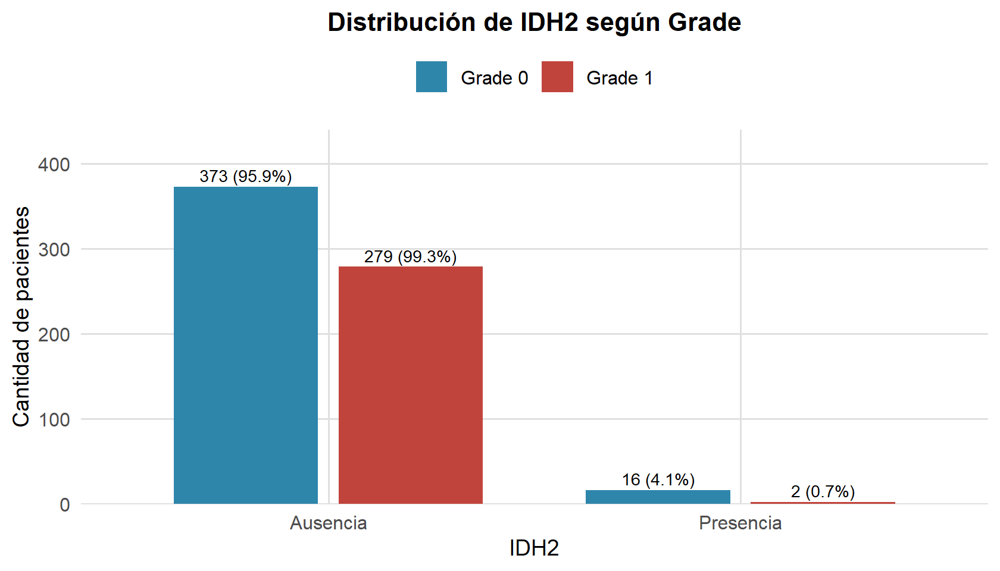
2.5.4.19 FAT4
En este caso, FAT4 presenta un comportamiento muy similar en los dos niveles de Grade. La presencia de esta variable representa el 2,3 % de los casos en Grade 0 y aumenta ligeramente hasta el 3,2 % en Grade 1, mientras que la ausencia se mantiene por encima del 96 % en ambos grupos. La diferencia de solo 0,9 puntos porcentuales indica que no existe una separación clara entre los grados a partir de esta variable. Por lo tanto, FAT4 parece presentar una capacidad discriminativa reducida por sí sola en este análisis bivariado.
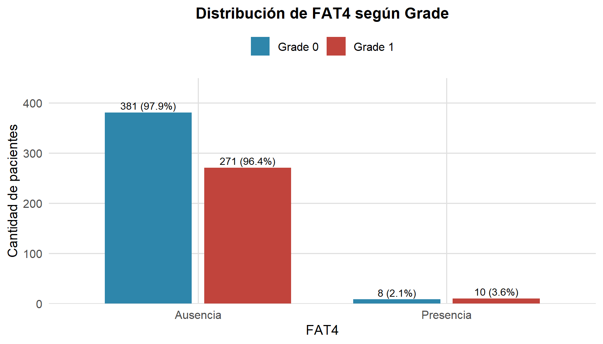
2.5.4.20 PDGFRA
La distribución de PDGFRA presenta una diferencia apreciable entre los dos grupos de Grade. En Grade 0, la presencia de mutación de PDGFRA corresponde al 1,5 % de los pacientes (6 casos), mientras que en Grade 1 aumenta hasta el 4,3 % (12 casos).
Por otro lado, la ausencia de mutación de PDGFRA continúa siendo la categoría predominante en ambos grupos, con un 98,5 % en Grade 0 y un 95,7 % en Grade 1. Esto representa una diferencia de 2,8 puntos porcentuales en la presencia de mutación de PDGFRA entre ambos grados. Aunque la presencia de la variable sigue siendo poco frecuente, se observa una tendencia hacia una mayor proporción en Grade 1. Por tanto, a diferencia de variables como FAT4, donde las proporciones eran prácticamente iguales, PDGFRA muestra una separación algo más evidente entre los grupos.
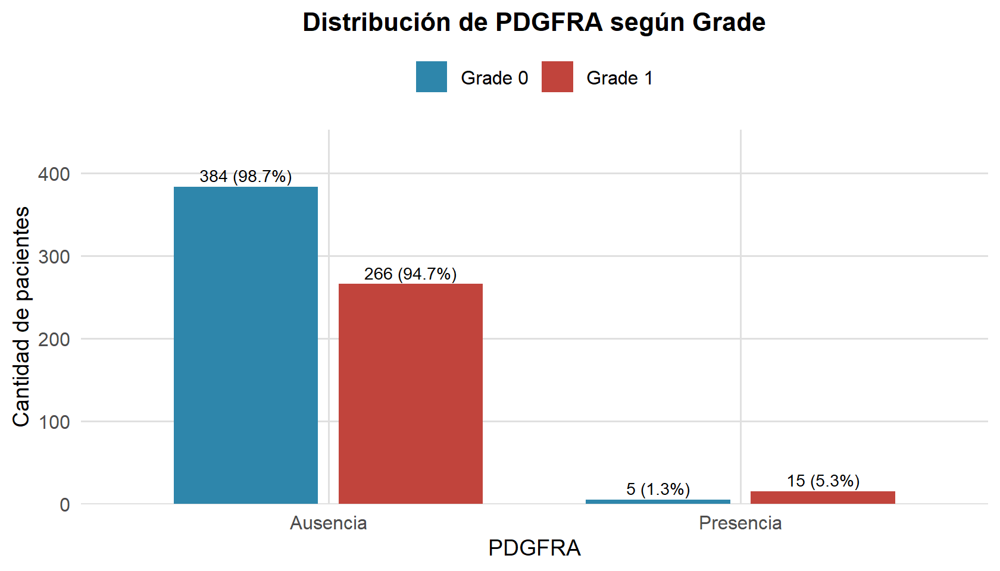
Las variables genéticas presentan, en conjunto, comportamientos muy heterogéneos frente a Grade: mientras genes como IDH1, CIC, ATRX y FUBP1 muestran diferencias marcadas y estadísticamente significativas entre LGG y GBM, otros como BCOR, CSMD3, FAT4 y PIK3CA presentan distribuciones prácticamente equivalentes entre ambos grupos, sugiriendo un poder discriminativo individual bajo.
2.5.5 Multicolinealidad y correlación
train_num <- train_data |>
select(-Race) |>
mutate(across(everything(), ~ as.numeric(as.character(.x))))
spearman_corr <- cor(train_num, method = "spearman")
spearman_long <- as.data.frame(spearman_corr) |>
rownames_to_column("var1") |>
pivot_longer(-var1, names_to = "var2", values_to = "r") |>
mutate(var1 = factor(var1, levels = colnames(spearman_corr)),
var2 = factor(var2, levels = colnames(spearman_corr)))
# Mascara triangular superior (equivalente a np.triu)
spearman_long <- spearman_long |>
mutate(ord1 = as.integer(var1), ord2 = as.integer(var2)) |>
filter(ord2 <= ord1)
ggplot(spearman_long, aes(x = var2, y = var1, fill = r)) +
geom_tile(color = "white", linewidth = 0.3) +
scale_fill_gradient2(low = "#2E86AB", mid = "white", high = "#C1443C",
midpoint = 0, limits = c(-1, 1),
name = "Coeficiente de\nCorrelación de\nSpearman (r)") +
labs(title = "Matriz de Correlación de Spearman (Train Set - 23 Variables)",
x = NULL, y = NULL) +
theme(axis.text.x = element_text(angle = 90, vjust = 0.5, hjust = 1, size = 8),
axis.text.y = element_text(size = 8),
panel.grid = element_blank())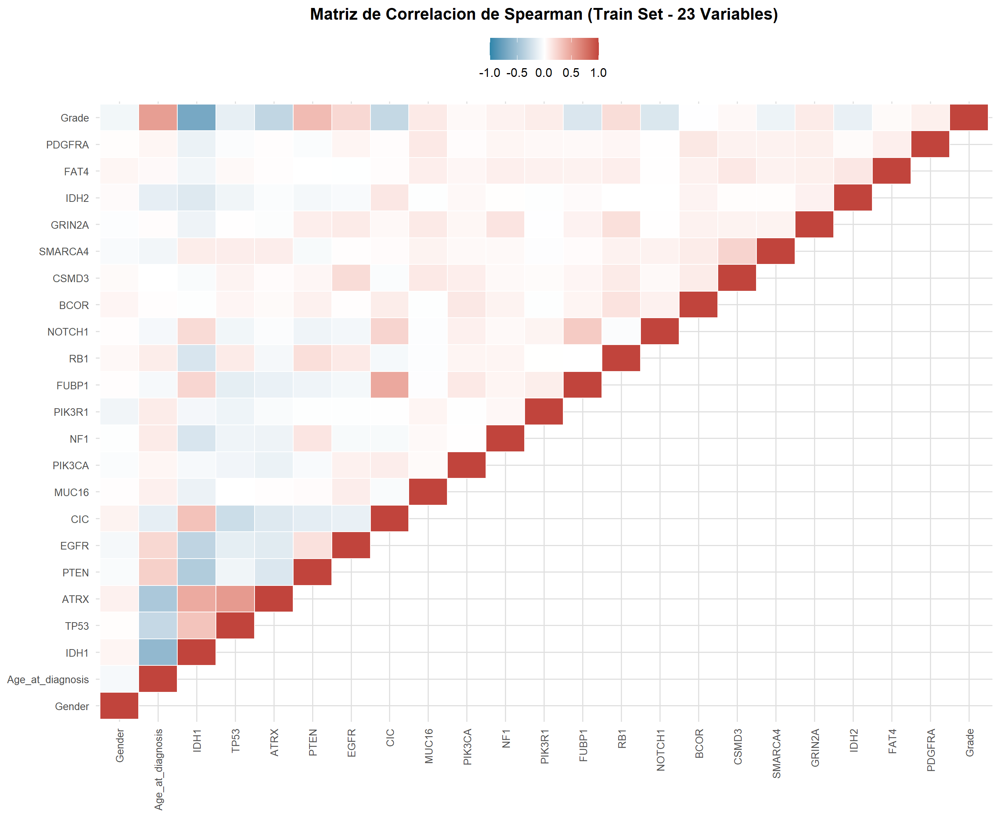
target_corr <- spearman_corr[, "Grade"]
target_corr <- target_corr[names(target_corr) != "Grade"]
target_corr <- sort(target_corr)
df_target_corr <- tibble(variable = names(target_corr), r = target_corr) |>
mutate(variable = factor(variable, levels = variable),
signo = ifelse(r < 0, "neg", "pos"))
ggplot(df_target_corr, aes(x = variable, y = r, fill = signo)) +
geom_col(color = "black", linewidth = 0.3) +
geom_hline(yintercept = 0, linetype = "dashed") +
geom_text(aes(label = sprintf("%.2f", r),
hjust = ifelse(r >= 0, -0.15, 1.1)),
size = 3, fontface = "bold") +
coord_flip(ylim = c(-0.85, 0.65)) +
scale_fill_manual(values = c("neg" = PALETTE_GRADE["0"], "pos" = PALETTE_GRADE["1"]), guide = "none") +
labs(title = "Correlación de Spearman de cada Atributo con la Severidad (Grade)",
x = NULL, y = "Coeficiente de Correlación (r)") +
theme(panel.border = element_blank())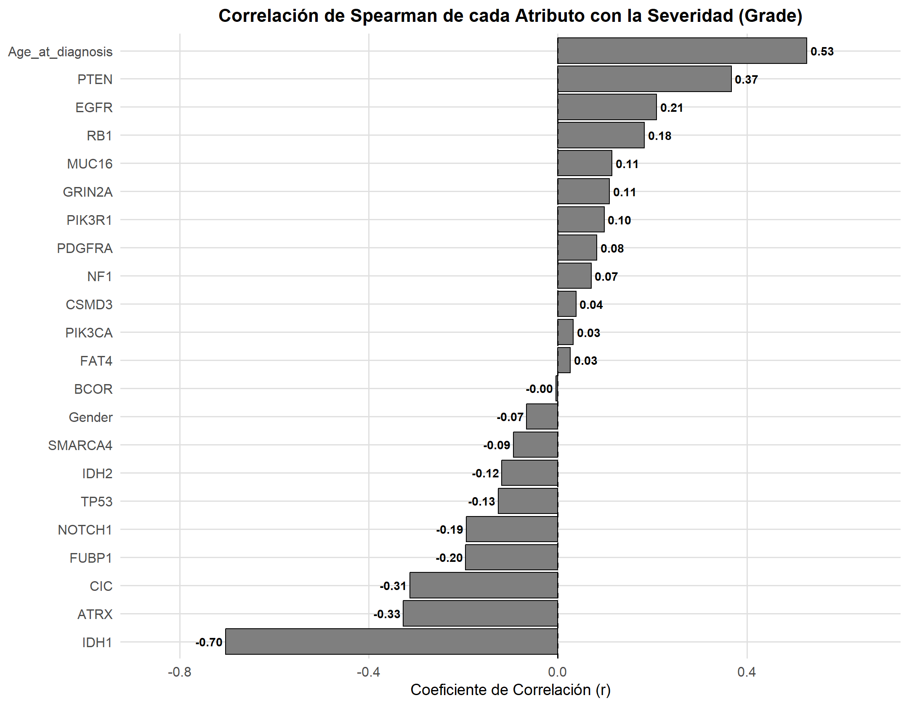
calcular_asociacion <- function(x, y) {
tabla <- table(x, y)
chi2_res <- suppressWarnings(chisq.test(tabla, correct = FALSE))
n <- sum(tabla)
phi2 <- unname(chi2_res$statistic) / n
r <- nrow(tabla); k <- ncol(tabla)
phi2corr <- max(0, phi2 - ((k - 1) * (r - 1)) / (n - 1))
rcorr <- r - ((r - 1)^2) / (n - 1)
kcorr <- k - ((k - 1)^2) / (n - 1)
denominator <- min(kcorr - 1, rcorr - 1)
v_cramer <- if (denominator > 0) sqrt(phi2corr / denominator) else 0
list(chi2 = unname(chi2_res$statistic), p_val = chi2_res$p.value, v = v_cramer)
}
train_data_bin <- train_data |>
mutate(Race = ifelse(as.character(Race) == "0", 0, 1))
cat_cols <- setdiff(names(train_data_bin), "Age_at_diagnosis")
n_cols <- length(cat_cols)
cramer_matrix <- matrix(1, nrow = n_cols, ncol = n_cols,
dimnames = list(cat_cols, cat_cols))
chi2_results <- list()
pares_asociados <- list()
for (i in seq_len(n_cols)) {
var1 <- cat_cols[i]
if (i > 1) for (j in seq_len(i - 1)) {
var2 <- cat_cols[j]
res <- calcular_asociacion(train_data_bin[[var1]], train_data_bin[[var2]])
cramer_matrix[i, j] <- res$v
cramer_matrix[j, i] <- res$v
if (var2 == "Grade") {
chi2_results[[length(chi2_results) + 1]] <- tibble(
Variable = var1, `Chi2 Stat` = round(res$chi2, 2),
`p-value` = res$p_val, `V de Cramer` = round(res$v, 4))
} else if (var1 == "Grade") {
chi2_results[[length(chi2_results) + 1]] <- tibble(
Variable = var2, `Chi2 Stat` = round(res$chi2, 2),
`p-value` = res$p_val, `V de Cramer` = round(res$v, 4))
}
if (var1 != "Grade" && var2 != "Grade" && res$v > 0.4) {
pares_asociados[[length(pares_asociados) + 1]] <- tibble(
`Variable 1` = var1, `Variable 2` = var2, `V de Cramer (V)` = round(res$v, 4))
}
}
}
df_asociacion <- bind_rows(chi2_results) |> arrange(desc(`V de Cramer`))
cat("ASOCIACIÓN CATEGÓRICA CON GRADE (CHI-CUADRADO Y V DE CRAMER)\n")## ASOCIACIÓN CATEGÓRICA CON GRADE (CHI-CUADRADO Y V DE CRAMER)kable(df_asociacion, row.names = FALSE) |>
kable_styling(bootstrap_options = c("striped", "hover", "condensed"), full_width = FALSE)| Variable | Chi2 Stat | p-value | V de Cramer |
|---|---|---|---|
| IDH1 | 333.00 | 0.0000000 | 0.7045 |
| PTEN | 83.02 | 0.0000000 | 0.3501 |
| ATRX | 74.39 | 0.0000000 | 0.3312 |
| CIC | 62.70 | 0.0000000 | 0.3037 |
| EGFR | 36.33 | 0.0000000 | 0.2298 |
| NOTCH1 | 22.69 | 0.0000019 | 0.1800 |
| FUBP1 | 22.25 | 0.0000024 | 0.1782 |
| RB1 | 22.10 | 0.0000026 | 0.1776 |
| TP53 | 15.00 | 0.0001074 | 0.1447 |
| MUC16 | 13.91 | 0.0001917 | 0.1389 |
| GRIN2A | 9.25 | 0.0023511 | 0.1111 |
| PDGFRA | 9.25 | 0.0023511 | 0.1111 |
| Race | 8.02 | 0.0046175 | 0.1025 |
| Gender | 7.76 | 0.0053482 | 0.1005 |
| PIK3R1 | 7.38 | 0.0065788 | 0.0977 |
| IDH2 | 7.22 | 0.0072109 | 0.0964 |
| NF1 | 6.47 | 0.0109467 | 0.0904 |
| SMARCA4 | 5.89 | 0.0151868 | 0.0855 |
| CSMD3 | 1.44 | 0.2295015 | 0.0257 |
| FAT4 | 1.41 | 0.2353658 | 0.0247 |
| PIK3CA | 1.38 | 0.2397542 | 0.0239 |
| BCOR | 0.00 | 0.9500927 | 0.0000 |
df_pares_asociados <- bind_rows(pares_asociados)
if (nrow(df_pares_asociados) > 0) {
df_pares_asociados <- df_pares_asociados |> arrange(desc(`V de Cramer (V)`))
}
cat("\nPARES DE GENES CON ALTA ASOCIACIÓN MUTUA (V > 0,4)\n")##
## PARES DE GENES CON ALTA ASOCIACIÓN MUTUA (V > 0,4)if (nrow(df_pares_asociados) == 0) {
cat("No se detectaron pares de genes con alta redundancia mutua (V > 0,4).\n")
} else {
kable(df_pares_asociados, row.names = FALSE) |>
kable_styling(bootstrap_options = c("striped", "condensed"), full_width = FALSE)
}| Variable 1 | Variable 2 | V de Cramer (V) |
|---|---|---|
| ATRX | TP53 | 0.5389 |
| ATRX | IDH1 | 0.4723 |
| FUBP1 | CIC | 0.4350 |
## IDENTIFICACIÓN DE PARES REDUNDANTES (|r| > 0,7)pares_altos <- list()
columnas <- colnames(spearman_corr)
for (i in seq_along(columnas)) {
if (i > 1) for (j in seq_len(i - 1)) {
r_val <- spearman_corr[i, j]
if (abs(r_val) > 0.7) {
pares_altos[[length(pares_altos) + 1]] <- tibble(
`Variable 1` = columnas[i], `Variable 2` = columnas[j],
`Coeficiente (r)` = round(r_val, 4))
}
}
}
df_redundancias <- bind_rows(pares_altos)
df_predictores_red <- if (nrow(df_redundancias) > 0) {
df_redundancias |> filter(`Variable 1` != "Grade", `Variable 2` != "Grade")
} else {
df_redundancias
}
if (nrow(df_predictores_red) == 0) {
cat("• No se detectaron pares de variables independientes con correlación |r| > 0,7.\n")
cat("• Conclusión: No existen redundancias severas ni riesgo de multicolinealidad entre los predictores.\n")
} else {
cat("• Advertencia: Se encontraron los siguientes pares con alta redundancia que justifican exclusión:\n")
print(df_predictores_red)
}## • No se detectaron pares de variables independientes con correlación |r| > 0,7.
## • Conclusión: No existen redundancias severas ni riesgo de multicolinealidad entre los predictores.El análisis bivariado y de correlación de Spearman sobre el conjunto de entrenamiento (\(n = 671\)) revela asociaciones clínico-moleculares altamente discriminantes entre Gliomas de Bajo Grado (LGG) y Glioblastoma Multiforme (GBM):
Asociaciones Individuales con la Severidad Tumoral (Grade):
- Biomarcadores Protectores (Asociados a LGG): La mutación en el gen
IDH1constituye el factor molecular con mayor capacidad discriminativa e inversa respecto a la malignidad (\(r = -0,70\), \(V \approx 0,70\), \(p < 0,001\)), seguida por alteraciones enATRX(\(r = -0,33\), \(V \approx 0,32\)) yCIC(\(r = -0,31\), \(V \approx 0,31\)). - Indicadores de Riesgo (Asociados a GBM): La variable
Age_at_diagnosisrepresenta el principal correlato clínico directo con la severidad (\(r = +0,53\)), confirmando la mayor prevalencia de GBM en edades avanzadas. A nivel genómico,PTENdestaca como el marcador de riesgo más sólido (\(V = 0,3613\), \(r = +0,37\)), seguido porEGFR(\(V = 0,2011\), \(r = +0,21\)) yRB1(\(V = 0,1722\), \(r = +0,18\)). - Variables No Significativas: Las variables con \(p > 0,05\) en Chi-cuadrado, valores de \(V < 0,08\) y magnitudes de \(\vert{}r\vert{} < 0,10\) (como
PDGFRA,NF1,Gender,CSMD3,BCOR,PIK3CAyFAT4) aportan una varianza explicativa insignificante, respaldando su eliminación para simplificar el modelo predictivo y reducir costos diagnósticos.
Arquitectura de Interacción Inter-Genómica (\(V > 0.40\)):
- Patrones de Co-ocurrencia: El par
ATRX–TP53presenta la mayor fuerza de asociación mutua (\(V = 0,5440\), \(r \approx 0,35\)), reflejando el eje de co-mutación clásico en la astrocitogénesis. Las interaccionesFUBP1–CIC(\(V = 0,4592\)) yATRX–IDH1(\(V = 0,4562\)) reafirman las firmas genómicas del linaje oligodendroglial y de gliomas de bajo grado. - Exclusión Mutua: La relación entre
PTENeIDH1(\(V = 0,4028\)) responde a una regla de incompatibilidad biológica asociada al grado tumoral (IDH1mutado en LGG vs.PTENalterado en GBM).
Diagnóstico de Multicolinealidad para el Modelado Predictivo:
Dado que ningún par de variables independientes superó el umbral crítico de redundancia (\(V > 0,70\) o \(\vert{}r\vert{} > 0,70\)), se confirma la ausencia de multicolinealidad estructural en la muestra de entrenamiento. Este resultado valida la retención de este subconjunto de biomarcadores, permitiendo a los algoritmos de clasificación explotar estas interacciones complejas sin generar inestabilidad en la estimación de parámetros.